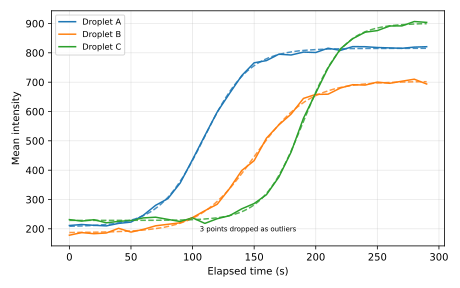
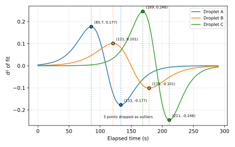
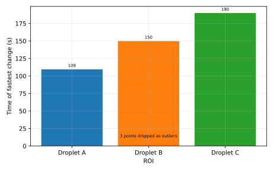

<!--
  (C) Copyright 2026 Blue Ocean Technologies, Inc., Toronto, ON
  All rights reserved.

  This software is provided without warranty under the terms of the AGPL-3.0
  license included in LICENSE and may be redistributed only under the
  conditions described in the aforementioned license. The license is also
  available online at https://www.gnu.org/licenses/agpl-3.0.txt

  Thanks for using Microdrop open source!
-->
<title>Image Analysis Tutorial</title>
<nav data-contents></nav>
<style>
:root { --mask: #ff2d55; }
table.icons-table tr.group-start td { border-top: 2px solid var(--line); }
.tbtn.tbtn-slim { width: 16px; height: 48px; }
/* Example plots, drawn by the app's own plot code (matplotlib). */
.view-examples { display: grid; grid-template-columns: repeat(auto-fit, minmax(300px, 1fr)); gap: 12px; margin: 12px 0 4px; }
.view-examples figure.demo { margin: 0; }
svg.mpl { display: block; width: 100%; height: auto; border-radius: 6px; }
/* Droplet shape demos. */
.shape-demo { display: grid; grid-template-columns: minmax(0, 260px) minmax(0, 1fr); gap: 14px; align-items: start; }
.shape-demo svg { display: block; width: 100%; max-width: 260px; height: auto; border-radius: 6px; }
table.shape-compare td:not(:first-child), table.shape-compare th:not(:first-child) { text-align: center; }
.shape-key { font-size: .88rem; color: var(--muted); }
.shape-key > span { white-space: nowrap; margin-right: 12px; }
.shape-key i { display: inline-block; width: 18px; height: 10px; margin-right: 5px; vertical-align: middle; border-radius: 2px; }
.shape-key .k-drop { background: var(--glow); }
.shape-key .k-ell { border-top: 2px solid var(--orange); height: 0; }
.shape-key .k-hull { border-top: 2px dashed var(--gold); height: 0; }
.shape-key .k-box { border-top: 2px dotted var(--muted); height: 0; }
.shape-key .k-roi { border-top: 2px dashed var(--teal); height: 0; }
@media (max-width: 560px) {
  .shape-demo { grid-template-columns: minmax(0, 1fr); }
  .shape-demo svg { max-width: 240px; margin: 0 auto; }
  table.shape-compare { font-size: .8rem; }
  table.shape-compare th, table.shape-compare td { padding: 4px 3px; }
}
</style>
<svg width="0" height="0" style="position:absolute" aria-hidden="true" focusable="false"><defs><symbol id="md-backspace_outline" viewBox="0 0 48 48"><path d="M38 31.2L35.2 34L28 26.8L20.8 34L18 31.2L25.2 24L18 16.8L20.8 14L28 21.2L35.2 14L38 16.8L30.8 24L38 31.2M44 6C45.1 6 46 6.4 46.8 7.2C47.6 8 48 8.9 48 10L48 38C48 39.1 47.6 40 46.8 40.8C46 41.6 45.1 42 44 42L14 42C12.7 42 11.6 41.4 10.8 40.2L0 24L10.8 7.8C11.6 6.6 12.7 6 14 6L44 6M44 10L14 10L4.6 24L14 38L44 38L44 10"/></symbol><symbol id="md-backspace_reverse_outline" viewBox="0 0 48 48"><path d="M10 31.2L12.8 34L20 26.8L27.2 34L30 31.2L22.8 24L30 16.8L27.2 14L20 21.2L12.8 14L10 16.8L17.2 24L10 31.2M4 6C2.9 6 1.9 6.4 1.2 7.2C0.4 8 0 8.9 0 10L0 38C0 39.1 0.4 40 1.2 40.8C1.9 41.6 2.9 42 4 42L34 42C35.3 42 36.4 41.4 37.2 40.2L48 24L37.2 7.8C36.4 6.6 35.3 6 34 6L4 6M4 10L34 10L43.4 24L34 38L4 38L4 10"/></symbol></defs></svg>

<header data-hero id="start">
  <h1>ROI analysis: what every term means</h1>
  <p>This guide explains, in plain language, every setting and every number in MicroDrop's
  image analysis: the Image Viewer pane and the ROI Intensities pane.</p>
  <p>You do not need any image-processing background. Each item says <strong>what it is</strong>,
  <strong>when you would use it</strong>, <strong>what changing it does</strong>, and the
  <strong>value MicroDrop starts with</strong>. The small pictures are live: drag the sliders.</p>
</header>

<!-- ============================================================ -->
<section class="part" aria-labelledby="pipeline-h">
<section data-term id="pipeline">
  <h3 id="pipeline-h">How a number is made</h3>
  <p>Every point on the plot is one number, for one region, in one image. It is made in a fixed order.
  The first three steps change the picture itself and the fourth decides which pixels count, so they all change what is measured.
  Everything after the measurement only changes how the numbers are shown or compared.</p>
  <figure class="demo" aria-label="Analysis pipeline diagram">
    <svg viewBox="0 0 748 170" role="img">
      <title>The analysis pipeline, step by step</title>
      <g font-size="12">
        <g transform="translate(10,30)">
          <rect width="96" height="64" rx="8" fill="var(--surface)" stroke="var(--line)"/>
          <text x="48" y="28" text-anchor="middle" style="fill:var(--ink);font-weight:600">Image</text>
          <text x="48" y="46" text-anchor="middle">from camera</text>
        </g>
        <g transform="translate(118,30)">
          <rect width="96" height="64" rx="8" fill="var(--surface)" stroke="var(--line)"/>
          <text x="48" y="28" text-anchor="middle" style="fill:var(--ink);font-weight:600">Perspective</text>
          <text x="48" y="46" text-anchor="middle">straighten (opt.)</text>
        </g>
        <g transform="translate(226,30)">
          <rect width="96" height="64" rx="8" fill="var(--surface)" stroke="var(--purple)"/>
          <text x="48" y="28" text-anchor="middle" style="fill:var(--ink);font-weight:600">Rolling ball</text>
          <text x="48" y="46" text-anchor="middle">flatten (opt.)</text>
        </g>
        <g transform="translate(334,30)">
          <rect width="96" height="64" rx="8" fill="var(--surface)" stroke="var(--mask)" stroke-dasharray="5 3"/>
          <text x="48" y="28" text-anchor="middle" style="fill:var(--ink);font-weight:600">Cut masks</text>
          <text x="48" y="46" text-anchor="middle">ROI − masks</text>
        </g>
        <g transform="translate(442,30)">
          <rect width="96" height="64" rx="8" fill="var(--surface)" stroke="var(--teal)"/>
          <text x="48" y="28" text-anchor="middle" style="fill:var(--ink);font-weight:600">Measure</text>
          <text x="48" y="46" text-anchor="middle">ROI + ring</text>
        </g>
        <g transform="translate(550,30)">
          <rect width="96" height="64" rx="8" fill="var(--surface)" stroke="var(--line)"/>
          <text x="48" y="28" text-anchor="middle" style="fill:var(--ink);font-weight:600">Cleanup</text>
          <text x="48" y="46" text-anchor="middle">outliers, shifts</text>
        </g>
        <g transform="translate(658,30)">
          <rect width="80" height="64" rx="8" fill="var(--surface)" stroke="var(--accent)"/>
          <text x="40" y="28" text-anchor="middle" style="fill:var(--ink);font-weight:600">Plot + fit</text>
          <text x="40" y="46" text-anchor="middle">curves</text>
        </g>
        <line x1="10" y1="118" x2="538" y2="118" stroke="var(--purple)" stroke-width="2"/>
        <text x="274" y="136" text-anchor="middle">changes the measured pixels (stored with the results)</text>
        <line x1="550" y1="118" x2="738" y2="118" stroke="var(--accent)" stroke-width="2" stroke-dasharray="5 4"/>
        <text x="644" y="136" text-anchor="middle">changes the display only</text>
        <path d="M108 57l6 5-6 5M216 57l6 5-6 5M324 57l6 5-6 5M432 57l6 5-6 5M540 57l6 5-6 5M648 57l6 5-6 5" fill="none" stroke="var(--muted)" stroke-width="1.5"/>
      </g>
    </svg>
    <figcaption>Left of the measurement, settings change the actual numbers, so MicroDrop recalculates when you change
    them. Right of it, your stored measurements are never touched: you can switch cleanup options on and off freely.</figcaption>
  </figure>
</section>
</section>

<!-- ============================================================ -->
<section data-part id="walkthrough">
<h2>Quick walkthrough</h2>
<p class="intro">From a folder of images to a curve in six steps. The pictures are sketches of the real controls, not screenshots;
the <a href="#part-toolbar">Toolbar icons</a> section shows every button exactly as it looks.</p>
<svg width="0" height="0" style="position:absolute" aria-hidden="true" focusable="false"><defs><marker id="wt-arrow" viewBox="0 0 8 8" refX="7" refY="4" markerWidth="6" markerHeight="6" orient="auto"><path d="M0 0L8 4L0 8z" fill="context-stroke"/></marker></defs></svg>
<ol class="steps">
<li class="step">
  <figure class="step-panel"><svg viewBox="0 0 300 170" role="img" aria-label="Image Viewer with the folder button highlighted"><rect x="0.5" y="0.5" width="299" height="169" rx="6" fill="var(--surface)" stroke="var(--line)"/><path d="M0.5 18H299.5" stroke="var(--line)"/><text x="8" y="13" style="fill:var(--muted);font-size:10px;font-weight:600">Image Viewer</text><rect x="6" y="24" width="78" height="140" rx="3" fill="var(--surface-2)"/><text x="12" y="38" style="font-size:8px">&#8250; Experiments</text><text x="12" y="54" style="font-size:8px">&#8250; Image Groups</text><text x="12" y="70" style="font-size:8px">&#8250; Images</text><text x="12" y="86" style="font-size:8px">&#8250; Analysis Exclusion</text><text x="12" y="102" style="font-size:8px">&#8250; Contrast</text><rect x="12" y="28" width="68" height="14" rx="2" fill="none" stroke="var(--accent)" stroke-width="1.5"/><rect x="92" y="23" width="20" height="20" rx="3" fill="var(--icon-on)" stroke="var(--icon-on)"/><use href="#ic-folder_open" x="95" y="26" width="14" height="14" style="fill:#fff"/><rect x="114" y="23" width="20" height="20" rx="3" fill="var(--surface-2)" stroke="var(--line)"/><use href="#ic-home" x="117" y="26" width="14" height="14" style="fill:var(--ink)"/><rect x="136" y="23" width="20" height="20" rx="3" fill="var(--surface-2)" stroke="var(--line)"/><use href="#ic-open_in_new" x="139" y="26" width="14" height="14" style="fill:var(--ink)"/><rect x="166" y="23" width="20" height="20" rx="3" fill="var(--surface-2)" stroke="var(--line)"/><use href="#ic-previous" x="169" y="26" width="14" height="14" style="fill:var(--ink)"/><rect x="188" y="23" width="20" height="20" rx="3" fill="var(--surface-2)" stroke="var(--line)"/><use href="#ic-play_arrow" x="191" y="26" width="14" height="14" style="fill:var(--ink)"/><rect x="210" y="23" width="20" height="20" rx="3" fill="var(--surface-2)" stroke="var(--line)"/><use href="#ic-next" x="213" y="26" width="14" height="14" style="fill:var(--ink)"/><rect x="92" y="46" width="200" height="118" rx="3" fill="#1b2228"/><circle cx="140" cy="92" r="15" fill="var(--glow)" opacity="0.85"/><circle cx="196" cy="112" r="13" fill="var(--glow)" opacity="0.6"/><circle cx="248" cy="84" r="14" fill="var(--glow)" opacity="0.45"/><text x="236" y="34" style="fill:var(--ink);font-size:9px">7/30</text></svg></figure>
  <div class="step-text">
    <h4><span class="step-n">1</span>Load an image folder</h4>
    <p>In the <span class="ui">Image Viewer</span>, the folder button <span class="ui">Choose the image folder</span> opens the experiment's raw captures by default; pick another experiment under <span class="ui">Experiments</span> in the sidebar.</p>
    <p>You should see the first image and its position at the right end of the button row (for example 7/30). Step with the arrow buttons, or press play to flick through them and check the droplets stay in view.</p>
  </div>
</li>
<li class="step">
  <figure class="step-panel"><svg viewBox="0 0 300 170" role="img" aria-label="Drawing an elliptical ROI around a droplet and renaming it"><rect x="0.5" y="0.5" width="299" height="169" rx="6" fill="var(--surface)" stroke="var(--line)"/><path d="M0.5 18H299.5" stroke="var(--line)"/><text x="8" y="13" style="fill:var(--muted);font-size:10px;font-weight:600">Image Viewer</text><rect x="8" y="24" width="250" height="100" rx="3" fill="#1b2228"/><circle cx="110" cy="74" r="22" fill="var(--glow)" opacity="0.85"/><ellipse cx="110" cy="74" rx="26" ry="26" fill="none" stroke="var(--teal)" stroke-width="2" stroke-dasharray="5 3"/><path d="M110 74L132 88" stroke="#fff" stroke-width="1.2" marker-end="url(#wt-arrow)"/><text x="138" y="98" style="fill:#fff;font-size:9px">click-drag from the centre</text><rect x="268" y="26" width="20" height="20" rx="3" fill="var(--icon-on)" stroke="var(--icon-on)"/><use href="#ic-circle" x="271" y="29" width="14" height="14" style="fill:#fff"/><rect x="268" y="48" width="20" height="20" rx="3" fill="var(--surface-2)" stroke="var(--line)"/><use href="#ic-rectangle" x="271" y="51" width="14" height="14" style="fill:var(--ink)"/><rect x="268" y="70" width="20" height="20" rx="3" fill="var(--surface-2)" stroke="var(--line)"/><use href="#ic-pill" x="271" y="73" width="14" height="14" style="fill:var(--ink)"/><rect x="268" y="92" width="20" height="20" rx="3" fill="var(--surface-2)" stroke="var(--line)"/><use href="#ic-pentagon" x="271" y="95" width="14" height="14" style="fill:var(--ink)"/><rect x="8" y="130" width="250" height="34" rx="3" fill="var(--surface-2)"/><text x="14" y="142" style="fill:var(--muted);font-size:8px;font-weight:600">Name</text><rect x="12" y="146" width="80" height="14" rx="2" fill="var(--surface)" stroke="var(--accent)"/><text x="16" y="156" style="fill:var(--ink);font-size:9px">Droplet A|</text><text x="100" y="156" style="font-size:8px">double-click to rename</text></svg></figure>
  <div class="step-text">
    <h4><span class="step-n">2</span>Draw an ROI and name it</h4>
    <p>Choose a shape on the toolbar at the image's right edge (the circle is the usual one) and click-drag from the droplet's centre outwards. The tool stays armed, so draw one ROI per droplet, then press <kbd>Esc</kbd>.</p>
    <p>Each ROI gets a row in the table under the plot. Double-click its name ("ROI 1") to call it something meaningful; that name is used in the legend and the CSV.</p>
  </div>
</li>
<li class="step">
  <figure class="step-panel"><svg viewBox="0 0 300 170" role="img" aria-label="An ROI with its background ring, and the Ring Gap and Ring Width settings"><rect x="0.5" y="0.5" width="299" height="169" rx="6" fill="var(--surface)" stroke="var(--line)"/><path d="M0.5 18H299.5" stroke="var(--line)"/><text x="8" y="13" style="fill:var(--muted);font-size:10px;font-weight:600">Image Viewer</text><rect x="8" y="24" width="170" height="140" rx="3" fill="#1b2228"/><circle cx="93" cy="94" r="26" fill="var(--glow)" opacity="0.85"/><circle cx="93" cy="94" r="44" fill="none" stroke="var(--gold)" stroke-width="12" opacity="0.55"/><circle cx="93" cy="94" r="30" fill="none" stroke="var(--teal)" stroke-width="2"/><path d="M123 94H138" stroke="#fff" stroke-width="1"/><text x="140" y="80" style="fill:#fff;font-size:8px">gap</text><text x="120" y="154" style="fill:var(--gold);font-size:8px">ring</text><rect x="154" y="28" width="20" height="20" rx="3" fill="var(--icon-on)" stroke="var(--icon-on)"/><use href="#ic-crop" x="157" y="31" width="14" height="14" style="fill:#fff"/><rect x="186" y="24" width="106" height="140" rx="3" fill="var(--surface-2)"/><text x="192" y="38" style="fill:var(--muted);font-size:8px;font-weight:600">&#8964; Advanced</text><text x="192" y="54" style="fill:var(--ink);font-size:8px;font-weight:600">Measurement</text><text x="192" y="72" style="font-size:8px">Ring Gap</text><rect x="244" y="62" width="40" height="14" rx="2" fill="var(--surface)" stroke="var(--accent)"/><text x="250" y="72" style="fill:var(--ink);font-size:9px">2</text><text x="192" y="92" style="font-size:8px">Ring Width</text><rect x="244" y="82" width="40" height="14" rx="2" fill="var(--surface)" stroke="var(--accent)"/><text x="250" y="92" style="fill:var(--ink);font-size:9px">4</text><text x="192" y="112" style="font-size:8px">Ball Radius</text><rect x="244" y="102" width="40" height="14" rx="2" fill="var(--surface)" stroke="var(--line)"/><text x="250" y="112" style="fill:var(--muted);font-size:9px">50</text></svg></figure>
  <div class="step-text">
    <h4><span class="step-n">3</span>Set the background ring</h4>
    <p>Open <span class="ui">Advanced</span> under the image. In its <span class="ui">Measurement</span> section, <span class="ui">Ring Gap</span> (start: 2 px) and <span class="ui">Ring Width</span> (start: 4 px) place the ring that reads the "nothing" level next to each droplet.</p>
    <p>Turn on <span class="ui">Show the background rings</span> (crop icon) to see them. The ring should sit on empty chip, clear of the droplet's glow and of its neighbours.</p>
  </div>
</li>
<li class="step">
  <figure class="step-panel"><svg viewBox="0 0 300 170" role="img" aria-label="Rolling-ball correction flattening uneven illumination"><rect x="0.5" y="0.5" width="299" height="169" rx="6" fill="var(--surface)" stroke="var(--line)"/><path d="M0.5 18H299.5" stroke="var(--line)"/><text x="8" y="13" style="fill:var(--muted);font-size:10px;font-weight:600">Image Viewer</text><defs><linearGradient id="wt-uneven" x1="0" x2="1"><stop offset="0" stop-color="#4a5560"/><stop offset="1" stop-color="#151b20"/></linearGradient></defs><rect x="8" y="24" width="124" height="104" rx="3" fill="url(#wt-uneven)"/><circle cx="46" cy="76" r="14" fill="var(--glow)" opacity="0.85"/><circle cx="98" cy="70" r="14" fill="var(--glow)" opacity="0.85"/><text x="70" y="142" text-anchor="middle" style="font-size:8px">uneven light</text><path d="M138 76H158" stroke="var(--purple)" stroke-width="2" marker-end="url(#wt-arrow)"/><rect x="164" y="24" width="102" height="104" rx="3" fill="#1b2228"/><circle cx="194" cy="76" r="14" fill="var(--glow)" opacity="0.85"/><circle cx="240" cy="70" r="14" fill="var(--glow)" opacity="0.85"/><circle cx="230" cy="102" r="20" fill="none" stroke="var(--purple)" stroke-width="1.5" stroke-dasharray="4 3"/><text x="215" y="142" text-anchor="middle" style="font-size:8px">flattened</text><rect x="274" y="26" width="20" height="20" rx="3" fill="var(--icon-on)" stroke="var(--icon-on)"/><use href="#ic-tonality" x="277" y="29" width="14" height="14" style="fill:#fff"/><rect x="274" y="48" width="20" height="20" rx="3" fill="var(--icon-on)" stroke="var(--icon-on)"/><use href="#ic-adjust" x="277" y="51" width="14" height="14" style="fill:#fff"/></svg></figure>
  <div class="step-text">
    <h4><span class="step-n">4</span>Optional: rolling-ball correction</h4>
    <p>If the light is brighter on one side of the chip, switch on the rolling ball (half-filled circle icon) and set <span class="ui">Ball Radius</span>.</p>
    <p>The image now shows the flattened picture, which is what gets measured. The target icon below it draws the ball: it should be clearly bigger than your droplets.</p>
  </div>
</li>
<li class="step">
  <figure class="step-panel"><svg viewBox="0 0 300 170" role="img" aria-label="The ROI Intensities pane after Calculate, one curve per ROI"><rect x="0.5" y="0.5" width="299" height="169" rx="6" fill="var(--surface)" stroke="var(--line)"/><path d="M0.5 18H299.5" stroke="var(--line)"/><text x="8" y="13" style="fill:var(--muted);font-size:10px;font-weight:600">ROI Intensities</text><text x="90" y="34" style="font-size:8px">View</text><rect x="112" y="25" width="56" height="13" rx="2" fill="var(--surface-2)" stroke="var(--line)"/><text x="116" y="34" style="fill:var(--ink);font-size:8px">Over time &#9662;</text><text x="176" y="34" style="font-size:8px">Plot</text><rect x="194" y="25" width="98" height="13" rx="2" fill="var(--surface-2)" stroke="var(--line)"/><text x="198" y="34" style="fill:var(--ink);font-size:8px">Mean intensity &#9662;</text><rect x="30" y="46" width="262" height="104" fill="#fff" stroke="var(--line)"/><polyline points="34.0,138.6 42.8,138.2 51.5,138.6 60.3,138.8 69.0,137.8 77.8,137.2 86.6,134.5 95.3,130.4 104.1,127.6 112.8,121.3 121.6,111.6 130.3,101.9 139.1,92.2 147.9,84.6 156.6,77.3 165.4,72.1 174.1,71.2 182.9,68.6 191.7,68.9 200.4,67.7 209.2,67.9 217.9,66.1 226.7,67.0 235.4,65.4 244.2,65.5 253.0,65.8 261.7,68.0 270.5,66.1 279.2,65.7 288.0,65.5" fill="none" stroke="#1f77b4" stroke-width="1.6"/><polyline points="34.0,142.6 42.8,141.6 51.5,142.0 60.3,141.7 69.0,139.8 77.8,141.3 86.6,140.2 95.3,138.8 104.1,72.8 112.8,137.6 121.6,135.4 130.3,132.6 139.1,129.9 147.9,123.6 156.6,116.1 165.4,112.1 174.1,102.9 182.9,97.5 191.7,93.1 200.4,86.6 209.2,85.0 217.9,84.9 226.7,82.4 235.4,81.0 244.2,81.2 253.0,80.0 261.7,80.5 270.5,79.6 279.2,78.8 288.0,80.8" fill="none" stroke="#ff7f0e" stroke-width="1.6"/><polyline points="34.0,136.2 42.8,136.8 51.5,136.3 60.3,137.5 69.0,136.9 77.8,136.6 86.6,135.5 95.3,135.3 104.1,137.6 112.8,137.0 121.6,135.5 130.3,137.8 139.1,135.8 147.9,134.6 156.6,131.8 165.4,129.6 174.1,126.0 182.9,118.8 191.7,108.6 200.4,94.7 209.2,84.4 217.9,74.2 226.7,66.4 235.4,62.2 244.2,59.6 253.0,58.9 261.7,57.0 270.5,57.0 279.2,55.2 288.0,55.5" fill="none" stroke="#2ca02c" stroke-width="1.6"/><text x="160" y="162" text-anchor="middle" style="font-size:8px">Elapsed time (s)</text><text x="12" y="100" transform="rotate(-90 12 100)" text-anchor="middle" style="font-size:8px">Mean intensity</text></svg></figure>
  <div class="step-text">
    <h4><span class="step-n">5</span>Calculate and read the plot</h4>
    <p>Click <span class="ui">Calculate and plot</span> (the chart icon above the image). MicroDrop measures every ROI in every included image that passes the <span class="ui">Images</span> filter and draws the result in the <span class="ui">ROI Intensities</span> pane.</p>
    <p>With <span class="ui">View</span> on Over time and <span class="ui">Plot</span> on Mean intensity you get one curve per droplet over time. Switch <span class="ui">Plot</span> to Background-corrected mean to use the ring from step 3.</p>
  </div>
</li>
<li class="step">
  <figure class="step-panel"><svg viewBox="0 0 300 170" role="img" aria-label="Fit tab with a sigmoid fit, and the export button writing a CSV"><rect x="0.5" y="0.5" width="299" height="169" rx="6" fill="var(--surface)" stroke="var(--line)"/><path d="M0.5 18H299.5" stroke="var(--line)"/><text x="8" y="13" style="fill:var(--muted);font-size:10px;font-weight:600">ROI Intensities</text><rect x="30" y="24" width="38" height="14" rx="2" fill="var(--surface-2)" stroke="var(--line)"/><text x="49" y="34" text-anchor="middle" style="fill:var(--ink);font-size:8px">Axes</text><rect x="70" y="24" width="38" height="14" rx="2" fill="var(--accent-soft)" stroke="var(--line)"/><text x="89" y="34" text-anchor="middle" style="fill:var(--ink);font-size:8px">Fit</text><rect x="110" y="24" width="38" height="14" rx="2" fill="var(--surface-2)" stroke="var(--line)"/><text x="129" y="34" text-anchor="middle" style="fill:var(--ink);font-size:8px">Cleanup</text><rect x="150" y="24" width="38" height="14" rx="2" fill="var(--surface-2)" stroke="var(--line)"/><text x="169" y="34" text-anchor="middle" style="fill:var(--ink);font-size:8px">Expected</text><rect x="190" y="24" width="38" height="14" rx="2" fill="var(--surface-2)" stroke="var(--line)"/><text x="209" y="34" text-anchor="middle" style="fill:var(--ink);font-size:8px">Export</text><rect x="30" y="42" width="70" height="13" rx="2" fill="var(--surface-2)" stroke="var(--line)"/><text x="34" y="51" style="fill:var(--ink);font-size:8px">Sigmoid &#9662;</text><rect x="30" y="58" width="160" height="92" fill="#fff" stroke="var(--line)"/><circle cx="30.0" cy="142.9" r="1.6" fill="#1f77b4"/><circle cx="35.5" cy="142.6" r="1.6" fill="#1f77b4"/><circle cx="41.0" cy="142.9" r="1.6" fill="#1f77b4"/><circle cx="46.6" cy="143.1" r="1.6" fill="#1f77b4"/><circle cx="52.1" cy="142.1" r="1.6" fill="#1f77b4"/><circle cx="57.6" cy="141.6" r="1.6" fill="#1f77b4"/><circle cx="63.1" cy="138.9" r="1.6" fill="#1f77b4"/><circle cx="68.6" cy="135.0" r="1.6" fill="#1f77b4"/><circle cx="74.1" cy="132.4" r="1.6" fill="#1f77b4"/><circle cx="79.7" cy="126.3" r="1.6" fill="#1f77b4"/><circle cx="85.2" cy="117.1" r="1.6" fill="#1f77b4"/><circle cx="90.7" cy="107.7" r="1.6" fill="#1f77b4"/><circle cx="96.2" cy="98.4" r="1.6" fill="#1f77b4"/><circle cx="101.7" cy="91.2" r="1.6" fill="#1f77b4"/><circle cx="107.2" cy="84.1" r="1.6" fill="#1f77b4"/><circle cx="112.8" cy="79.2" r="1.6" fill="#1f77b4"/><circle cx="118.3" cy="78.3" r="1.6" fill="#1f77b4"/><circle cx="123.8" cy="75.8" r="1.6" fill="#1f77b4"/><circle cx="129.3" cy="76.1" r="1.6" fill="#1f77b4"/><circle cx="134.8" cy="75.0" r="1.6" fill="#1f77b4"/><circle cx="140.3" cy="75.1" r="1.6" fill="#1f77b4"/><circle cx="145.9" cy="73.4" r="1.6" fill="#1f77b4"/><circle cx="151.4" cy="74.3" r="1.6" fill="#1f77b4"/><circle cx="156.9" cy="72.8" r="1.6" fill="#1f77b4"/><circle cx="162.4" cy="72.9" r="1.6" fill="#1f77b4"/><circle cx="167.9" cy="73.2" r="1.6" fill="#1f77b4"/><circle cx="173.4" cy="75.3" r="1.6" fill="#1f77b4"/><circle cx="179.0" cy="73.5" r="1.6" fill="#1f77b4"/><circle cx="184.5" cy="73.0" r="1.6" fill="#1f77b4"/><circle cx="190.0" cy="72.8" r="1.6" fill="#1f77b4"/><polyline points="30.0,142.9 35.5,142.8 41.0,142.6 46.6,142.3 52.1,141.7 57.6,140.7 63.1,139.0 68.6,136.2 74.1,132.0 79.7,125.7 85.2,117.5 90.7,108.0 96.2,98.5 101.7,90.3 107.2,84.1 112.8,79.8 118.3,77.1 123.8,75.4 129.3,74.4 134.8,73.8 140.3,73.4 145.9,73.2 151.4,73.1 156.9,73.0 162.4,73.0 167.9,73.0 173.4,73.0 179.0,73.0 184.5,73.0 190.0,73.0" fill="none" stroke="#1f77b4" stroke-width="1.4" stroke-dasharray="4 2"/><rect x="214" y="70" width="20" height="20" rx="3" fill="var(--icon-on)" stroke="var(--icon-on)"/><use href="#ic-save" x="217" y="73" width="14" height="14" style="fill:#fff"/><path d="M238 79H254" stroke="var(--muted)" stroke-width="1.2" marker-end="url(#wt-arrow)"/><rect x="258" y="66" width="34" height="26" rx="3" fill="var(--surface-2)" stroke="var(--line)"/><text x="275" y="83" text-anchor="middle" style="fill:var(--ink);font-size:9px;font-weight:600">CSV</text><text x="252" y="108" text-anchor="middle" style="font-size:8px">analysis folder</text></svg></figure>
  <div class="step-text">
    <h4><span class="step-n">6</span>Clean up, fit and export</h4>
    <p>On the <span class="ui">Cleanup</span> tab, <span class="ui">Outliers</span> drops one-off glitches; on the <span class="ui">Fit</span> tab, pick a fit such as Sigmoid to get the dashed model curve and its timing.</p>
    <p>When it looks right, the save icon above the image (<span class="ui">Export the intensities</span>) writes a CSV into the experiment's analysis folder; the save icon in the plot pane saves the figure itself.</p>
  </div>
</li>
</ol>
</section>

<!-- ============================================================ -->
<section data-part id="part-regions">
<h2>Regions and images</h2>
<p class="intro">Before anything can be measured you mark where to look, and decide which images count.</p>

<section data-term id="roi" data-where="Image Viewer, right-hand toolbar">
  <h3>ROI (region of interest) and its shapes</h3>
  <p>An ROI is an outline you draw on the image around something you want to measure, usually a droplet.
  MicroDrop reads the brightness of every pixel inside the outline, in every image of the series.</p>
  <div data-what><p>A shape: <strong>ellipse</strong> (circle or oval), <strong>box</strong> (rectangle, corners can be rounded),
    <strong>capsule</strong> (a pill shape, good for stretched droplets), or <strong>contour</strong>
    (any outline you click point by point).</p></div>
  <div data-when><p>Pick the shape that hugs your droplet best. A tight fit matters: pixels of dark background inside the
    outline pull the average down.</p></div>
  <div data-fact="What changing it does"><p>Moving, resizing or reshaping an ROI changes which pixels are measured, so its numbers are recalculated.
    Each draw tool stays armed so you can draw several in a row; press <kbd>Esc</kbd> to put it away.</p></div>
  <div data-typical><p>Slightly smaller than the droplet, so the edge (where the droplet fades into the background) is not included.</p></div>
</section>

<section data-term id="negative-mask" data-where="Image Viewer, right-hand toolbar">
  <h3>Negative mask</h3>
  <p>A shape you draw to <em>remove</em> pixels. It is subtracted from every ROI it overlaps, so MicroDrop measures the
  <strong>effective region</strong>: the ROI minus all the masks on it.</p>
  <div data-what><p>Any draw tool's shape, drawn while negative mask mode is on, named <strong>Mask 1</strong>, <strong>Mask 2</strong>, …
    It has no numbers of its own and is never a background reference.</p></div>
  <div data-when><p>When something inside an ROI is not droplet: a reflection, an electrode edge, dust, a neighbour poking in.</p></div>
  <div data-fact="What changing it does"><p>Count, Area, Mean, Median, Min, Max, Integrated, the background-corrected values and the
    <a href="#part-shape">shape quantities</a> of every ROI it overlaps are recalculated on the effective region. The
    <a href="#ring">ring</a> is still grown from the whole ROI as drawn, so its outer edge never follows a hole, and mask pixels are left out of it too.
    Masks move, resize, rotate and take drift corrections like ROIs, but AI tracking leaves them where they were drawn.
    Hiding one with its eye takes it off the image and out of the calculation; both results are kept, so switching back and forth is instant.
    A mask starts at the image you draw it on and applies to every later image; earlier images are untouched.
    To cover earlier images, draw it on the earliest image it should apply to.
    A mask covering a whole ROI leaves Count 0 and every other value blank (a gap in the plot).</p></div>
  <div data-fact="Typical use"><p>None until needed; keep it tight, as every pixel removed makes the mean noisier.</p></div>
  <p>In the app:</p>
  <ul class="uses">
    <li>The toggle <i data-glyph="remove_selection" data-on data-inline></i>
    under the draw tools stays lit until clicked again; while lit, every draw tool (ellipse, box, capsule, contour) makes masks.
    The AI tools always make ROIs. A copied mask pastes as a mask.</li>
    <li>On the image a mask is hatched with a dashed red outline, so it reads as a hole.</li>
    <li>The ROI Intensities table lists <strong>Mask N</strong> after the ROIs, with blank stats. Masks get no plot line or CSV rows.</li>
    <li>The eye on a Mask row hides it on the image and removes it from the calculation: toggle it to compare the numbers with and without the mask.
    The toolbar's <a href="#tb-roi">show / hide ROIs</a> eye only hides masks from view; they are still subtracted.</li>
    <li>On images captured before the one a mask was drawn on, it is not shown and its name in the table turns grey.</li>
  </ul>
  <figure data-demo="neg" id="neg" aria-label="Interactive negative mask demo">
    <div class="controls">
      <label>Mask position <input type="range" id="neg-x" min="4" max="92" value="68"><output id="neg-x-o">68 px</output></label>
      <label>Mask radius <input type="range" id="neg-r" min="2" max="36" value="8"><output id="neg-r-o">8 px</output></label>
    </div>
    <div class="shape-demo"><svg id="neg-svg" viewBox="0 0 260 260" role="img"><title>A negative mask cutting a reflection out of an ROI</title>
      <defs>
        <pattern id="neg-hatch" width="6" height="6" patternUnits="userSpaceOnUse" patternTransform="rotate(45)"><rect width="6" height="6" fill="var(--mask)" fill-opacity=".15"/><line x1="0" y1="0" x2="0" y2="6" stroke="var(--mask)" stroke-width="2"/></pattern>
        <mask id="neg-cut"><rect x="10" y="10" width="240" height="240" fill="#fff"/><ellipse cx="130" cy="130" rx="75" ry="65" fill="#000"/><circle id="neg-cut-c" cy="120" r="0" fill="#fff"/></mask>
      </defs>
      <image id="neg-img" x="10" y="10" width="240" height="240" style="image-rendering:pixelated"/>
      <rect x="10" y="10" width="240" height="240" fill="#000" opacity=".6" mask="url(#neg-cut)"/>
      <ellipse cx="130" cy="130" rx="75" ry="65" fill="none" stroke="var(--teal)" stroke-width="2"/>
      <circle id="neg-c" cy="120" r="0" fill="url(#neg-hatch)" stroke="var(--mask)" stroke-width="2" stroke-dasharray="5 3"/>
      <text x="130" y="224" text-anchor="middle" style="fill:#fff;font-weight:700">ROI 1</text>
      <text id="neg-label" text-anchor="middle" style="fill:var(--mask);font-weight:700;stroke:#000;stroke-width:3px;paint-order:stroke">Mask 1</text>
    </svg><table class="small readout" id="neg-read"></table></div>
    <div class="status" id="neg-status" aria-live="polite"></div>
    <figcaption>96 × 96 px, 1 px = 20 µm. Only the undimmed pixels are measured. The bright spot is a reflection, not droplet.</figcaption>
  </figure>
</section>

<section data-term id="drift" data-where="Edit mode">
  <h3>Moving an ROI on a later image (drift override)</h3>
  <div data-what><p>Droplets can creep across the chip during an experiment. If you edit an ROI while looking at a later image,
    MicroDrop does not move it everywhere. It records a change that applies <em>from that image onward</em>.
    Earlier images keep the old position.</p></div>
  <div data-when><p>When a droplet has moved partly out of its outline. Step to the first image where it has moved and drag the ROI back onto it.</p></div>
  <div data-fact="What changing it does"><p>Only the images from that point on are re-measured. <span class="ui">Reset</span> can also clear these overrides.
    The AI <span class="ui">Track</span> button and <a href="#rim-trace"><span class="ui">Trace rims</span></a> create them automatically.</p></div>
  <div data-typical><p>None until you need one.</p></div>
</section>

<section data-term id="ai" data-where="AI Detection section; Significance and Drift Interval need AI support">
  <h3>AI detection options</h3>
  <p>The AI tools find droplets for you. <span class="ui">Pick</span> outlines the droplet you click,
  <span class="ui">Detect all</span> searches the whole image, and <span class="ui">Track</span> follows your ROIs through later images.
  What it finds appears as dashed <em>candidates</em>: click one to discard it, then press Accept.</p>
  <div data-fact="Significance"><p>Detect all asks the AI at many points in a grid. Significance is how many of those points must independently
    find the same droplet. Clear droplets usually score 2 to 4; a one-off speck scores 1.
    Raise it to hide noise, lower it to see faint droplets. Nothing is deleted: sliding it back brings candidates back.
    <strong>Starts at 2.</strong> Candidates you clicked yourself are never hidden by it.</p></div>
  <div data-fact="Min Size / Max Size"><p>Hide candidates smaller or larger than this average diameter, in pixels; while tracking or tracing rims, an
    outline outside them is not recorded.
    Use them to throw away dust (too small) or whole electrodes (too big). <strong>Start at 0 and 500 px.</strong></p></div>
  <div data-fact="Output Shape"><p>What a new ROI from Pick or an accepted candidate becomes: the traced <em>polygon</em> outline (follows the droplet
    exactly) or a fitted <em>ellipse</em> (smoother, easier to edit). Tracking leaves it alone: every ROI keeps the kind it
    was drawn as, so an ellipse stays an ellipse and a box a box. <strong>Starts as polygon.</strong></p></div>
  <div data-fact="Drift Interval"><p>While tracking, re-find the droplets every Nth image (the last image is always checked); images in between
    keep the last position. A larger number tracks faster but follows quick movement less closely.
    <strong>Starts at 3.</strong></p></div>
</section>

<section data-term id="rim-trace" data-where="ROI toolbar, beside Track">
  <h3>Tracing droplet rims (Trace rims)</h3>
  <p>Fluorescent droplets often show a thin bright rim at their edge. <span class="ui">Trace rims</span> follows that rim
  instead of asking the AI, so it needs no AI support installed. Starting from each ROI as it is on the image you are
  looking at, it finds the rim on every later image and records the outline as the ROI's shape there, the same way
  <span class="ui">Track</span> does. Press it again to stop; the images already traced are kept.</p>
  <div data-fact="What it needs"><p>A visible bright rim around each droplet, and an ROI drawn roughly on it (within about 30 px).
    Negative masks stay where you drew them. A shape you fix by hand on a later image restarts the trace from there,
    and images you deleted the ROI from are left alone.</p></div>
  <div data-fact="What it does"><p>On each image it looks along 360 rays from the droplet's centre for the bright line, keeps the outline
    smooth, and only lets it move a few pixels from the previous image, which keeps it off specks, dust and the
    reflection under the droplet. After a long pause between captures it searches wider, because the droplet may have
    changed shape. Every outline is then steadied against the three images on either side of it. Every later image is
    traced, so <span class="ui">Drift Interval</span> does not apply; <span class="ui">Min Size</span> and
    <span class="ui">Max Size</span> do. Each ROI keeps the kind it was drawn as: a polygon follows the rim exactly, and
    an ellipse, box or capsule takes the rim's fitted ellipse (same centre, tilt, proportions and area).</p></div>
  <div data-fact="Rim width (px)"><p>How wide the bright rim looks on the image. Match it to the rim; a wrong width finds the line less reliably.
    <strong>Starts at 5 px.</strong></p></div>
  <div data-fact="Rim search (px)"><p>How far the rim may move from one image to the next. Keep it small so the trace cannot jump to a nearby
    bright feature; raise it if droplets move or spread quickly between captures. <strong>Starts at 3 px.</strong></p></div>
  <div data-fact="Pair it with"><p>The traced outline sits on the bright rim itself, and the rim is glare, not fluorescence. Lower
    <span class="ui">Measure inside (%)</span> in the Measurement section (to about 90-95) so the measured mean leaves the
    rim out.</p></div>
</section>

<section data-term id="exclude" data-where="Analysis Exclusion box">
  <h3>Excluding images</h3>
  <div data-what><p>A mark that tells the analysis to skip an image: it is left out of the calculation, the plot, the CSV and drift tracking.
    You can still view it and draw on it. <span class="ui">Before</span>/<span class="ui">After</span> buttons mark or unmark every image on one side of the one shown.
    Clicking a point on the plot toggles its image's mark too.</p>
    <p><span class="ui">Exclude current image from area fit</span> is a lighter mark: the image stays in the analysis and only the <a href="#areafit">area fit</a> ignores it.
    <strong>Shift+click</strong> a point on the plot does the same, and <span class="ui">Restore all</span> beside the checkbox puts every image back into the fit.</p></div>
  <div data-when><p>A frame that is blurred, over-exposed, or was taken while something was being adjusted.</p></div>
  <div data-fact="What changing it does"><p>An excluded image drops out of the series without leaving a gap in the line. On the curves view its points stay as faint hollow markers: click one to bring the image back, or turn off <span class="ui">Excluded points</span> on the Cleanup tab to hide them. The mark is saved with the experiment.</p></div>
  <div data-typical><p>Nothing excluded.</p></div>
</section>

<section data-term id="scale" data-where="Ruler button">
  <h3>Image scale (calibration)</h3>
  <div data-what><p>Tells MicroDrop how big a pixel is in real life. Drag a line over something whose length you know
    (for example an electrode of known width), then type that length and unit.
    To remove the scale and its bar, drag any line and enter a length of 0.</p></div>
  <div data-when><p>When you want areas in mm² or µm² instead of pixels, or a scale bar on the image.</p></div>
  <div data-fact="What changing it does"><p>It does not change which pixels are measured. It changes the <a href="#stat-table">Area</a> column and the
    <a href="#stat-perarea">Per area</a> values, which are expressed in your unit instead of px².</p></div>
  <div data-typical><p>Not calibrated: sizes are reported in pixels (px²).</p></div>
</section>

<section data-term id="contrast" data-where="Contrast box">
  <h3>Contrast (Auto contrast, Min, Max)</h3>
  <div data-what><p>How the image is <em>displayed</em>: which brightness shows as black and which as white.
    Camera images often hold far more brightness levels than a screen can show, and look almost black without this.</p></div>
  <div data-when><p>To see faint droplets more clearly, or to compare images with the same display settings.</p></div>
  <div data-fact="What changing it does"><p><strong>Display only.</strong> It never changes a measured number.</p></div>
  <div data-typical><p>Auto contrast on: the darkest 0.1% of pixels show as black and the brightest 0.1% as white.</p></div>
</section>
</section>

<!-- ============================================================ -->
<section data-part id="part-toolbar">
<h2>Toolbar icons</h2>
<p class="intro">What each small button in the Image Viewer and the analysis panes does. Hover over a button in MicroDrop
to see a short description as a tooltip. Where a row shows a second, highlighted copy <i data-glyph="edit" data-on data-inline></i> of the icon, that is how
the button looks while its tool or switch is on (on Windows the highlight takes your system accent colour).
A heavier line in a table marks where the buttons form a new group. When the pane is too small, the button row above the image
scrolls sideways, and the toolbar on its right edge and the sidebar scroll down, each on its own; the image keeps the rest of the room.</p>

<section data-term id="tb-viewer" data-where="row above the image">
  <h3>Image viewer</h3>
  <p>Left to right along the top of the Image Viewer, in five groups: where the pictures come from, how they are framed, which one you see,
  undoing ROI changes, and the main analysis actions. The image's position in the series (for example 7/30) sits at the right end of the row.</p>
  <table class="small icons-table">
    <thead><tr><th>Icon</th><th>Button</th><th>What it does</th></tr></thead>
    <tbody>
      <tr><td class="icons"><i data-glyph="folder_open"></i></td><td class="lbl">Choose the image folder</td><td>Pick a different folder of images to look at; it starts on the current experiment's raw captures.</td></tr>
      <tr><td class="icons"><i data-glyph="home"></i></td><td class="lbl">Back to the experiment's captures</td><td>Jump back to the experiment you are running and show its newest image.</td></tr>
      <tr><td class="icons"><i data-glyph="open_in_new"></i></td><td class="lbl">Open the folder in the file browser</td><td>Opens the folder these images live in, so you can copy or inspect the files yourself.</td></tr>
      <tr class="group-start"><td class="icons"><i data-glyph="refresh"></i></td><td class="lbl">Fit image to the pane</td><td>Resets the zoom so the whole image fits the viewer again.</td></tr>
      <tr><td class="icons"><i data-glyph="zoom_in"></i></td><td class="lbl">Zoom in one step</td><td>Magnifies the image a step, for placing ROIs precisely on small droplets.</td></tr>
      <tr><td class="icons"><i data-glyph="zoom_out"></i></td><td class="lbl">Zoom out one step</td><td>Shrinks the image a step, to see more of the chip.</td></tr>
      <tr class="group-start"><td class="icons"><i data-glyph="previous"></i></td><td class="lbl">Previous image</td><td>Steps back one image in the series.</td></tr>
      <tr><td class="icons"><i data-glyph="play_arrow"></i><i data-glyph="pause" data-on></i></td><td class="lbl">Cycle through the images</td><td>Plays the folder like a slideshow; while playing the icon turns into a pause sign, so press it again to stop.</td></tr>
      <tr><td class="icons"><i data-glyph="next"></i></td><td class="lbl">Next image</td><td>Steps forward one image in the series.</td></tr>
      <tr class="group-start"><td class="icons"><i data-glyph="undo"></i></td><td class="lbl">Undo the last ROI change</td><td>Steps back one change to the drawn ROIs and masks: drawing, pasting, accepting AI candidates (one step for the whole accepted set), moving, resizing, rotating or reshaping, deleting, and Remove all ROIs. <kbd>Ctrl+Z</kbd> on the image does the same. Colour, eye and other style changes and the settings are not part of it, and the history starts afresh when you open another experiment or folder.</td></tr>
      <tr><td class="icons"><i data-glyph="redo"></i></td><td class="lbl">Redo the undone ROI change</td><td>Puts back the change you last undid (<kbd>Ctrl+Y</kbd> or <kbd>Ctrl+Shift+Z</kbd> on the image).</td></tr>
      <tr><td class="icons"><i data-glyph="delete_sweep"></i></td><td class="lbl">Remove all ROIs</td><td>Deletes every ROI and mask, with their drift corrections, so you can start the layout over. It asks first, and Undo brings them back.</td></tr>
      <tr class="group-start"><td class="icons"><i data-glyph="show_chart"></i></td><td class="lbl">Calculate and plot</td><td>Measures every ROI in every image that passes the <span class="ui">Images</span> filter and is not excluded, and draws the result in the plot pane. Use it after drawing or changing ROIs.</td></tr>
      <tr><td class="icons"><i data-glyph="reset_wrench"></i></td><td class="lbl">Reset calculated intensities</td><td>Throws away the measured numbers so the next Calculate starts fresh; it can also clear the drift corrections you made by moving ROIs on later images.</td></tr>
      <tr><td class="icons"><i data-glyph="save"></i></td><td class="lbl">Export the intensities</td><td>Writes the measurements as a CSV file into the experiment's analysis folder, calculating first if needed.</td></tr>
    </tbody>
  </table>
</section>

<section data-term id="tb-sidebar" data-where="Image Viewer">
  <h3>Sidebar and section headers</h3>
  <p>The arrows that fold parts of the viewer away to give the image more room, and the Experiments section's bin.</p>
  <table class="small icons-table">
    <thead><tr><th>Icon</th><th>Button</th><th>What it does</th></tr></thead>
    <tbody>
      <tr><td class="icons"><span class="tbtn tbtn-slim"><svg class="ic" aria-hidden="true"><use href="#ic-chevron_left"/></svg></span><span class="tbtn tbtn-slim"><svg class="ic" aria-hidden="true"><use href="#ic-chevron_right"/></svg></span></td><td class="lbl">Hide or show the selector sidebar</td><td>The tall, narrow bar down the pane's left edge. Its left-pointing arrow tucks the sidebar (Experiments, Image Groups, Images,
      Analysis Exclusion, Contrast, Metadata) away; while the sidebar is hidden the arrow points right and brings it back.</td></tr>
      <tr><td class="icons"><i data-glyph="expand_more"></i><i data-glyph="chevron_right"></i></td><td class="lbl">Open or fold a section</td><td>Next to a section title such as Experiments, Advanced, Measurement or AI Detection: pointing down means the section is open, pointing right means it is folded shut.</td></tr>
      <tr><td class="icons"><i data-glyph="delete"></i></td><td class="lbl">Send experiment folder to trash</td><td>In the Experiments section: moves the shown experiment's folder to the Recycle Bin (Trash on macOS and Linux), where it can be restored.
      The experiment MicroDrop is recording into cannot be sent there. <span class="ui">File &gt; Experiments &gt; Prune Experiments…</span> does the same
      for every experiment folder that holds only logs.</td></tr>
    </tbody>
  </table>
</section>

<section data-term id="tb-roi" data-where="toolbar on the image&#x27;s right edge">
  <h3>ROI tools</h3>
  <p>Top to bottom. Tools that put the viewer into a mode (drawing, the ruler, the AI picker) light up while that mode is active; the on/off switches light up while they are on.</p>
  <table class="small icons-table">
    <thead><tr><th>Icon</th><th>Button</th><th>What it does</th></tr></thead>
    <tbody>
      <tr><td class="icons"><i data-glyph="circle"></i><i data-glyph="circle" data-on></i></td><td class="lbl">Draw an elliptical ROI</td><td>Click-drag from the droplet's centre to draw a circle; its grip stretches it into an oval. Stays armed for the next one until you press Esc.</td></tr>
      <tr><td class="icons"><i data-glyph="rectangle"></i><i data-glyph="rectangle" data-on></i></td><td class="lbl">Draw a rectangular ROI</td><td>Click-drag a box over the region. Good for square wells or channels.</td></tr>
      <tr><td class="icons"><i data-glyph="pill"></i><i data-glyph="pill" data-on></i></td><td class="lbl">Draw a capsule ROI</td><td>Drag along the droplet's long axis, then use the grip to set its width. Fits stretched or elongated droplets.</td></tr>
      <tr><td class="icons"><i data-glyph="pentagon"></i><i data-glyph="pentagon" data-on></i></td><td class="lbl">Draw a contour ROI</td><td>Click point by point around an odd-shaped droplet; finish on the first point, by double-clicking, or with Enter.</td></tr>
      <tr><td class="icons"><i data-glyph="remove_selection"></i><i data-glyph="remove_selection" data-on></i></td><td class="lbl">Negative mask mode</td><td>While lit, the draw tools make <a href="#negative-mask">negative masks</a> instead of ROIs: shapes subtracted from every ROI they overlap. Stays on until clicked again.</td></tr>
      <tr><td class="icons"><i data-glyph="visibility_off"></i><i data-glyph="visibility" data-on></i></td><td class="lbl">Show / hide ROIs</td><td>Hides every ROI outline, mask and ring on the image so you can see the picture; nothing is measured differently.</td></tr>
      <tr class="group-start"><td class="icons"><i data-glyph="straighten"></i><i data-glyph="straighten" data-on></i></td><td class="lbl">Set the image scale</td><td>Drag a line over something whose real length you know, then type that length. Areas are then reported in mm² or µm² instead of pixels.</td></tr>
      <tr><td class="icons"><i data-glyph="tonality"></i><i data-glyph="tonality" data-on></i></td><td class="lbl">Rolling-ball background correction</td><td>Flattens uneven lighting out of every image before it is measured. While on, the image shows the corrected picture, so what you see is what is measured.</td></tr>
      <tr><td class="icons"><i data-glyph="adjust"></i><i data-glyph="adjust" data-on></i></td><td class="lbl">Show the rolling ball</td><td>Draws the ball at its real size on the image, so you can check it is bigger than your droplets. Only available while the correction above is on.</td></tr>
      <tr><td class="icons"><i data-glyph="view_in_ar"></i></td><td class="lbl">Define a perspective correction</td><td>Opens a window where you click four points on the image and drag them to where they belong, to undo a tilted camera view.</td></tr>
      <tr><td class="icons"><i data-glyph="transform"></i><i data-glyph="transform" data-on></i></td><td class="lbl">Apply the perspective correction</td><td>Straightens every image with the correction you defined before it is shown or measured. Available once a correction has been defined.</td></tr>
      <tr><td class="icons"><i data-glyph="crop"></i><i data-glyph="crop" data-on></i></td><td class="lbl">Show the background rings</td><td>Draws the ring around each ROI that its background level is read from, so you can check the ring sits on empty chip.</td></tr>
      <tr class="group-start"><td class="icons"><i data-glyph="edit"></i><i data-glyph="edit" data-on></i></td><td class="lbl">Edit ROIs</td><td>While lit, click an ROI to select it and drag it or its grips to move, resize, rotate or reshape it. Moving an ROI on a later image records drift from there on.</td></tr>
      <tr><td class="icons"><i data-glyph="content_copy"></i></td><td class="lbl">Copy the ROI's shape</td><td>Remembers the selected ROI's shape and size (Ctrl+C).</td></tr>
      <tr><td class="icons"><i data-glyph="content_paste"></i></td><td class="lbl">Paste a copied shape</td><td>Adds a new ROI with the copied shape, slightly offset, so identical droplets get identical outlines (Ctrl+V).</td></tr>
      <tr><td class="icons"><span class="tbtn"><svg class="ic" viewBox="0 0 48 48" aria-hidden="true"><use href="#md-backspace_outline"/></svg></span></td><td class="lbl">Delete the ROI from earlier images (Left Del)</td><td>Deletes the ROI you selected from every image before the shown one; this image keeps it. Needs an image shown and an ROI selected in edit mode. Undo, or the Restore button in the sidebar on an image it was deleted from, brings it back.</td></tr>
      <tr><td class="icons"><i data-glyph="delete"></i></td><td class="lbl">Delete the ROI from this image (Del)</td><td>Deletes the ROI you selected from the shown image only (same as the <kbd>Del</kbd> key); greyed out until you select one in edit mode. With no image shown the ROI is removed outright. Undo, or the Restore button in the sidebar, brings it back.</td></tr>
      <tr><td class="icons"><span class="tbtn"><svg class="ic" viewBox="0 0 48 48" aria-hidden="true"><use href="#md-backspace_reverse_outline"/></svg></span></td><td class="lbl">Delete the ROI from later images (Right Del)</td><td>Deletes the ROI you selected from every image after the shown one, captures still to come included; this image keeps it. Needs an image shown and an ROI selected in edit mode. Undo, or the Restore button in the sidebar on an image it was deleted from, brings it back.</td></tr>
      <tr class="group-start"><td class="icons"><i data-glyph="wand_shine"></i><i data-glyph="wand_shine" data-on></i></td><td class="lbl">AI picker</td><td>Click a droplet and the AI outlines it for you as a new ROI. Stays armed until Esc. Needs Help &gt; Install AI ROI Support.</td></tr>
      <tr><td class="icons"><i data-glyph="eye_tracking"></i></td><td class="lbl">Detect all droplets</td><td>Lets the AI find every droplet on the current image. They appear as dashed candidates: click any you do not want, then Accept.</td></tr>
      <tr><td class="icons"><i data-glyph="ink_highlighter_move"></i></td><td class="lbl">Track ROIs across images</td><td>Lets the AI follow each ROI through the later images and record how the droplets drift. Press again to stop; finished images are kept.</td></tr>
      <tr><td class="icons"><i data-glyph="trip_origin"></i></td><td class="lbl">Trace droplet rims</td><td>Follows each droplet's bright rim from its ROI through every later image, with no AI needed (see <a href="#rim-trace">Tracing droplet rims</a>). Press again to stop; finished images are kept.</td></tr>
    </tbody>
  </table>
</section>

<section data-term id="tb-ai" data-where="Advanced, under the image">
  <h3>AI Detection section</h3>
  <p>These two appear only while AI candidates are waiting for a decision.</p>
  <table class="small icons-table">
    <thead><tr><th>Icon</th><th>Button</th><th>What it does</th></tr></thead>
    <tbody>
      <tr><td class="icons"><i data-glyph="save"></i></td><td class="lbl">Accept the candidates</td><td>Turns every candidate that passed the filters into a real ROI.</td></tr>
      <tr><td class="icons"><i data-glyph="cancel"></i></td><td class="lbl">Discard all candidates</td><td>Throws all the dashed candidates away without making any ROIs.</td></tr>
    </tbody>
  </table>
</section>

<section data-term id="tb-plot" data-where="header, tabs and ROI table">
  <h3>Analysis plot pane</h3>
  <p>Buttons in the pane that shows the plot and the ROI table.</p>
  <table class="small icons-table">
    <thead><tr><th>Icon</th><th>Button</th><th>What it does</th></tr></thead>
    <tbody>
      <tr><td class="icons"><i data-glyph="visibility"></i><i data-glyph="visibility_off"></i></td><td class="lbl">Show or hide an ROI (eye column)</td><td>The open eye means the ROI's curve is drawn; click it (closed eye) to hide that curve and the ROI's outline on the image; it is still measured and exported. On a Mask row it hides the <a href="#negative-mask">mask</a> on the image and takes it out of the calculation.</td></tr>
      <tr><td class="icons"><i data-glyph="save"></i></td><td class="lbl">Save the plot</td><td>Saves the figure into the experiment's analysis folder, at the DPI and file format set on the Export tab.</td></tr>
      <tr><td class="icons"><i data-glyph="folder_open"></i></td><td class="lbl">Choose the heater-log folder</td><td>On the Axes tab, when the X axis is temperature or View is Temperature over time: pick the folder of heater logs to read temperatures from.</td></tr>
      <tr><td class="icons"><i data-glyph="function"></i></td><td class="lbl">Show the fitted equations</td><td>On the Fit tab: opens a table listing the fitted equation for every ROI.</td></tr>
    </tbody>
  </table>
</section>

<section data-term id="tb-perspective" data-where="Define Perspective Correction">
  <h3>Perspective window</h3>
  <p>The toolbar of the window the perspective button opens.</p>
  <table class="small icons-table">
    <thead><tr><th>Icon</th><th>Button</th><th>What it does</th></tr></thead>
    <tbody>
      <tr><td class="icons"><i data-glyph="reset_focus"></i></td><td class="lbl">Reset the perspective</td><td>Discards the four points so you can place them again from scratch.</td></tr>
      <tr><td class="icons"><i data-glyph="rotate_90_degrees_cw"></i></td><td class="lbl">Rotate 90°</td><td>Turns the corrected image a quarter turn clockwise, for a chip photographed sideways. Available once the four points are set.</td></tr>
      <tr><td class="icons"><i data-glyph="fit_screen"></i></td><td class="lbl">Fit the image in the window</td><td>Resets the zoom so the whole image fits the window.</td></tr>
    </tbody>
  </table>
</section>
</section>

<!-- ============================================================ -->
<section data-part id="part-measure">
<h2>Measurement settings</h2>
<p class="intro">These live in the <span class="ui">Measurement</span> section of <span class="ui">Advanced</span>, under the image. They change what is measured,
so changing one makes MicroDrop recalculate. The settings used are written into every row of the CSV export.
<span class="ui">Advanced</span>, <span class="ui">Measurement</span> and <span class="ui">AI Detection</span> each fold away on their own arrow.
Drag the divider between the image and <span class="ui">Advanced</span> to share the height; the settings scroll when they do not fit,
and the divider goes back to where you left it when you fold and reopen <span class="ui">Advanced</span> (until MicroDrop is closed).
<span class="ui">Zoom Step</span>, in the same section, only sets how far one mouse-wheel notch zooms the image.</p>

<section data-term id="ring" data-where="Measurement section; crop button shows it">
  <h3>Background ring (Ring Gap, Ring Width)</h3>
  <p>A droplet's brightness is partly the droplet and partly the chip, light leaking around, and camera offset.
  To tell them apart, MicroDrop measures a thin ring of chip <em>just outside</em> each ROI. The ring tells you how
  bright "nothing" is right next to that droplet.</p>
  <figure data-demo="ring" aria-label="Interactive background ring diagram">
    <div class="controls">
      <label>Ring Gap <input type="range" id="ring-gap" min="0" max="15" value="2"><output id="ring-gap-o">2 px</output></label>
      <label>Ring Width <input type="range" id="ring-width" min="1" max="20" value="4"><output id="ring-width-o">4 px</output></label>
    </div>
    <svg id="ring-svg" viewBox="0 0 600 260" role="img">
      <title>A droplet, its glow, and the background ring around it</title>
      <defs>
        <radialGradient id="drop-grad">
          <stop offset="0%" stop-color="var(--glow)" stop-opacity="0.95"/>
          <stop offset="88%" stop-color="var(--glow)" stop-opacity="0.85"/>
          <stop offset="100%" stop-color="var(--glow)" stop-opacity="0"/>
        </radialGradient>
        <linearGradient id="chip-grad" x1="0" x2="1">
          <stop offset="0" stop-color="#20262c"/>
          <stop offset="1" stop-color="#363e46"/>
        </linearGradient>
        <mask id="ring-mask">
          <rect width="600" height="260" fill="white"/>
          <circle id="neighbour-cut" cx="470" cy="130" r="54" fill="black"/>
        </mask>
      </defs>
      <rect width="600" height="260" fill="url(#chip-grad)" rx="6"/>
      <circle cx="260" cy="130" r="61" fill="url(#drop-grad)"/>
      <circle cx="470" cy="130" r="61" fill="url(#drop-grad)" opacity=".8"/>
      <path id="ring-path" fill="var(--gold)" fill-opacity=".45" stroke="var(--gold)" stroke-width="1.5" fill-rule="evenodd" mask="url(#ring-mask)"/>
      <circle cx="260" cy="130" r="54" fill="none" stroke="var(--teal)" stroke-width="2.5"/>
      <circle cx="470" cy="130" r="54" fill="none" stroke="var(--teal)" stroke-width="2.5" stroke-dasharray="6 4"/>
      <text x="260" y="134" text-anchor="middle" style="fill:#0b2a14;font-weight:700">ROI 1</text>
      <text x="470" y="134" text-anchor="middle" style="fill:#0b2a14;font-weight:700">ROI 2</text>
      <text x="14" y="22" style="fill:#cfd8de">chip (dark)</text>
      <text x="14" y="248" style="fill:#cfd8de">1 px = 3 drawing units</text>
    </svg>
    <div class="status" id="ring-status" aria-live="polite"></div>
    <figcaption>Blue line: the ROI. Amber: its background ring. The green fades out a pixel or two past the edge:
    that glow is the droplet, not background. Where the ring would run into another ROI (right), those pixels are left out.</figcaption>
  </figure>
  <div data-what><p>A band (in maths, an <em>annulus</em>) that follows the ROI's outline at a small distance.
    <strong>Ring Gap</strong> is the empty space between the ROI edge and the ring. <strong>Ring Width</strong> is how thick the ring is.
    Both are in pixels. It works for any shape, not just circles.</p></div>
  <div data-when><p>Whenever you plot a <a href="#stat-bg">background-corrected</a> value. It is especially useful when the light is uneven
    across the chip, because each droplet gets its <em>own</em> local background instead of one value for the whole picture.</p></div>
  <div data-fact="What changing it does">
      <p><strong>Gap too small:</strong> the ring catches the droplet's glow, so "background" reads too bright and the corrected value too low.</p>
      <p><strong>Gap too large:</strong> the ring drifts away from the droplet and may reach a different-looking part of the chip.</p>
      <p><strong>Width too thin:</strong> few pixels, so the background value is noisy. <strong>Too wide:</strong> it reaches further away and into neighbours (other ROIs are always cut out of it).</p>
      <p>Pixels under a <a href="#negative-mask">negative mask</a> are left out of the ring as well.</p>
      <p>Changing either value recalculates every number.</p>
    </div>
  <div data-typical><p><strong>Gap 2 px, Width 4 px</strong> (Gap can be 0 to 500, Width 1 to 500).</p></div>
</section>

<section data-term id="ball" data-where="Measurement section; tonality button turns it on">
  <h3>Rolling-ball background correction (Ball Radius)</h3>
  <p>Microscope and camera light is rarely even: often the middle of the picture is brighter than the corners.
  A droplet in the bright middle would then look brighter than an identical one in a corner.
  The rolling ball removes that slow, gentle unevenness from the <em>whole image</em> before anything is measured.</p>
  <figure data-demo="ball" aria-label="Interactive rolling ball demonstration">
    <div class="controls">
      <label>Ball Radius <input type="range" id="ball-r" min="5" max="200" value="50"><output id="ball-r-o">50 px</output></label>
      <label>Position <input type="range" id="ball-x" min="0" max="599" value="300"></label>
      <button type="button" id="ball-play">Play</button>
    </div>
    <svg id="ball-svg" viewBox="0 0 600 330" role="img">
      <title>A brightness profile across the image, the ball pushed up underneath it, and the result after subtraction</title>
    </svg>
    <div class="status" id="ball-status" aria-live="polite"></div>
    <figcaption>Top: brightness along one line across the image. Five droplets sit on a hump of uneven light.
    The violet bar is the "ball", pushed up from underneath as far as it fits. Dashed violet: the background it traces.
    Bottom: what is left after subtracting it.</figcaption>
  </figure>
  <div data-what>
      <p>Picture the brightness of the image as a landscape: bright places are hills. Droplets are narrow, steep hills;
      uneven lighting is a broad, gentle rise underneath them.</p>
      <p>Now push a ball up into that landscape from below, everywhere. Where the ball is too wide to fit into a narrow droplet-hill,
      it stops at the hill's foot. The surface the top of the ball reaches is the <strong>background</strong>.
      MicroDrop subtracts it, which leaves the droplets standing on a flat floor.</p>
      <p>(The name comes from the classic ImageJ tool. In MicroDrop the "ball" is really a flat disk, like a coin pushed up from
      underneath, which is why the demo draws a flat bar. The idea is identical.)</p>
    </div>
  <div data-when><p>When droplets in different parts of the picture should be comparable, but the illumination is brighter in some places.
    While it is on, the image you see is the corrected one, so what you see is what is measured.
    The <span class="ui">adjust</span> button next to it draws the ball on the image at its real size; drag its grip to choose the radius by eye.</p></div>
  <div data-fact="What changing it does">
      <p><strong>Radius too small</strong> (smaller than your droplets): the ball climbs <em>into</em> the droplets and counts part of
      them as background. Your signal shrinks or disappears. Try 20 px in the demo.</p>
      <p><strong>Radius too large:</strong> the ball cannot follow the gentle unevenness either, so some of it stays. Try 180 px.</p>
      <p><strong>Rule of thumb:</strong> comfortably larger than your biggest droplet's radius, but smaller than the size of the lighting pattern.
      Every number is recalculated when you change it, and the ring is measured on the corrected image too.</p>
    </div>
  <div data-typical><p><strong>Off</strong> by default. When on, it starts at <strong>50 px</strong> (allowed range 5 to 500 px).</p></div>
</section>

<section data-term id="perspective" data-where="3D-view button defines it; transform button applies it">
  <h3>Perspective correction</h3>
  <div data-what><p>If the camera looks at the chip slightly from an angle, rectangles look like trapezoids.
    You click four points on the image (for example the chip's corners), then drag them to where they should be.
    MicroDrop then straightens every image the same way.</p></div>
  <div data-when><p>When the chip appears tilted or skewed, so that ROIs drawn on one part of it are distorted.</p></div>
  <div data-fact="What changing it does"><p>When applied, every image is straightened <em>first</em>, before the rolling ball and before measuring.
    Your ROIs are drawn on, and measured on, the straightened image. Turning it on or off recalculates everything.</p></div>
  <div data-typical><p>Not defined. Once defined, you can switch it on and off.</p></div>
</section>
</section>

<!-- ============================================================ -->
<section data-part id="part-stats">
<h2>What you can plot (the Y axis)</h2>
<p class="intro">The <span class="ui">Plot</span> list above the chart chooses which number is drawn for each ROI.
"Intensity" is how bright a pixel is, as a count from the camera. A brighter fluorescent droplet gives bigger counts.</p>

<figure data-demo="size" aria-label="Interactive comparison of size-aware statistics">
  <div class="controls">
    <label>Droplet radius <input type="range" id="size-r" min="5" max="40" value="15"><output id="size-r-o">15 px</output></label>
    <label><input type="checkbox" id="size-cal" checked> Calibrated (1 px = 2 µm)</label>
  </div>
  <svg id="size-svg" viewBox="0 0 600 120" role="img"><title>A droplet whose size you can change</title></svg>
  <table class="small" aria-live="polite">
    <thead><tr><th>Stat</th><th style="text-align:right">Value</th><th>Changes with size?</th></tr></thead>
    <tbody id="size-table"></tbody>
  </table>
  <figcaption>Same droplet brightness (1200 counts per pixel inside, 200 in the ring), different size.
  Watch which numbers follow the size and which do not.</figcaption>
</figure>

<section data-term id="stat-mean">
  <h3>Mean intensity</h3>
  <div data-what><p>The average brightness of all pixels inside the ROI, minus any <a href="#negative-mask">negative masks</a> on it (the effective region).</p></div>
  <div data-when><p>The everyday choice: "how bright is this droplet?" It does not depend on how big you drew the ROI, as long as it sits inside the droplet.</p></div>
  <div data-read><p>Includes the background glow of the chip underneath, so two droplets on differently lit parts of the chip are not directly comparable. For that, use the background-corrected mean.</p></div>
  <div data-typical><p>This is the default plot.</p></div>
</section>

<section data-term id="stat-bg">
  <h3>Background-corrected mean</h3>
  <div data-what><p>The mean inside the ROI <strong>minus</strong> the mean of its <a href="#ring">background ring</a>.
    In words: how much brighter the droplet is than the chip right next to it.</p></div>
  <div data-when><p>The standard fluorescence measurement. Use it when the background varies across the chip or changes over time.</p></div>
  <div data-read><p>Zero means "no brighter than its surroundings". It can go slightly negative for an empty spot. It depends on the ring's Gap and Width.</p></div>
  <div data-typical><p>Ring Gap 2 px, Width 4 px.</p></div>
</section>

<section data-term id="stat-median">
  <h3>Median intensity</h3>
  <div data-what><p>Line all the ROI's pixels up from darkest to brightest and take the one in the middle.</p></div>
  <div data-when><p>When a few pixels are wildly off (a dust speck, a hot pixel, a reflection). The median ignores them; the mean does not.</p></div>
  <div data-read><p>Close to the mean for an evenly lit droplet. If the two differ a lot, something in the ROI is uneven.</p></div>
  <div data-typical><p>Not background-corrected.</p></div>
</section>

<section data-term id="stat-minmax">
  <h3>Min intensity and Max intensity</h3>
  <div data-what><p>The darkest and the brightest single pixel inside the ROI.</p></div>
  <div data-when><p>Checking problems rather than measuring. <strong>Max</strong> tells you whether the camera is saturated: if it sits at the camera's top value (for example 65535 on a 16-bit camera), the droplet is too bright to measure correctly. <strong>Min</strong> shows whether your ROI reaches into dark background.</p></div>
  <div data-read><p>Single pixels are noisy, so these lines jump around more than the mean.</p></div>
  <div data-typical><p>Not background-corrected.</p></div>
</section>

<section data-term id="stat-ring">
  <h3>Outline ring mean</h3>
  <div data-what><p>The average brightness of the <a href="#ring">background ring</a> alone: the "nothing" level next to the droplet.</p></div>
  <div data-when><p>To check the background itself. If it rises over time (for example, the chip starts to glow when it heats), you know the background correction is doing real work.</p></div>
  <div data-read><p>It should be flat and low. If it follows the droplet's curve, the ring is probably catching the droplet's glow: increase Ring Gap.</p></div>
  <div data-typical><p>Measured with Gap 2 px, Width 4 px.</p></div>
</section>

<section data-term id="stat-integrated">
  <h3>Integrated and Integrated (bg-corrected)</h3>
  <div data-what><p>The <strong>total</strong> light in the ROI: the mean multiplied by the number of pixels.
    The bg-corrected version uses the background-corrected mean, so it is the total light <em>above</em> background.</p></div>
  <div data-when><p>When the droplet's <em>amount</em> of fluorescent material matters, not its brightness. A droplet that spreads out gets dimmer, but its total stays the same.</p></div>
  <div data-read><p>It grows with the ROI's size. Two ROIs of different sizes on the same droplet give different totals, so draw ROIs that cover the whole droplet when you use it. Units are counts × pixels, so the numbers are large.</p></div>
  <div data-typical><p>Pick it from the Plot list.</p></div>
</section>

<section data-term id="stat-perarea">
  <h3>Per area and Per area (bg-corrected)</h3>
  <div data-what><p>Brightness per unit of real area: the mean divided by the area of one pixel. With a calibrated <a href="#scale">image scale</a> it reads "counts per mm²" (or µm²); without one, "per px²", which is the same as the mean.</p></div>
  <div data-when><p>To compare experiments taken at different magnifications or with different cameras, where one pixel covers a different area of chip.</p></div>
  <div data-read><p>Within one experiment its curve has exactly the same shape as the mean (it is the mean times a fixed number). It does not depend on how big the ROI is.</p></div>
  <div data-typical><p>Only meaningful once the image scale is set.</p></div>
</section>

<section data-term id="stat-shape-list">
  <h3>Shape quantities (Circularity, Shape change, Axis ratio, Eccentricity, Solidity, Extent, Orientation)</h3>
  <p>These seven describe the droplet's <em>shape</em>, not its brightness. They have their own part of this guide,
  <a href="#part-shape">Droplet shape</a>, with live demos, a comparison table and what each is useful for.</p>
</section>

<section data-term id="stat-table">
  <h3>Table and CSV-only columns (Count, Area, std, outline_*)</h3>
  <div data-what>
      <p><strong>Count</strong>: how many pixels are inside the ROI's effective region (the ROI minus any <a href="#negative-mask">negative masks</a>). <strong>Area</strong>: count × the area of one pixel, in your calibrated unit (px² if not calibrated). All other values use the same region.</p>
      <p>The CSV export also has <strong>std</strong> (standard deviation: how much the pixels vary around their mean) and the same stats for the ring, prefixed <code>outline_</code>.</p>
    </div>
  <div data-when><p>Count and Area confirm the ROI size; std tells you how even the droplet is. The table under the plot shows these for the image currently displayed.</p></div>
  <div data-read><p>The CSV is one row per image per ROI. It also records the outlier flag and the ring, ball and perspective settings used, so a file always says how it was made.</p></div>
  <div data-typical><p>Not plotted, except <strong>Area</strong>, which is also a <span class="ui">Plot</span> choice.</p></div>
</section>
</section>

<!-- ============================================================ -->
<section data-part id="part-shape">
<h2>Droplet shape</h2>
<p class="intro">Seven Plot choices describe the droplet's <em>shape</em> rather than its brightness: is it round, stretched,
lumpy, turned? This section shows how those numbers are made, lets you change a droplet and watch all seven respond, and
says which one to pick for what.</p>

<section data-term id="stat-shape">
  <h3>How a shape number is made</h3>
  <p>"Shape" here is the shape of the <strong>bright droplet inside the ROI</strong>, not the outline you drew. The ROI only
  says where to look: draw it a little larger than the droplet, and MicroDrop finds the droplet inside it by itself, in every image.
  Pixels under a <a href="#negative-mask">negative mask</a> are left out of that search.</p>
  <figure class="demo" aria-label="How a shape number is made, in three steps">
    <svg viewBox="0 0 600 150" role="img">
      <title>Threshold, outline, moments</title>
      <g font-size="12">
        <g transform="translate(20,10)">
          <rect width="110" height="110" rx="6" fill="#252c33"/>
          <ellipse cx="55" cy="55" rx="34" ry="24" fill="var(--glow)" opacity=".85"/>
          <circle cx="55" cy="55" r="50" fill="none" stroke="var(--teal)" stroke-width="2" stroke-dasharray="5 3"/>
          <text x="55" y="132" text-anchor="middle" style="fill:var(--ink);font-weight:600">Image + ROI</text>
        </g>
        <g transform="translate(170,10)">
          <rect width="110" height="110" rx="6" fill="#000"/>
          <ellipse cx="55" cy="55" rx="34" ry="24" fill="#fff"/>
          <text x="55" y="132" text-anchor="middle" style="fill:var(--ink);font-weight:600">1. Threshold</text>
        </g>
        <g transform="translate(320,10)">
          <rect width="110" height="110" rx="6" fill="var(--plot-bg)" stroke="var(--line)"/>
          <ellipse cx="55" cy="55" rx="34" ry="24" fill="none" stroke="var(--glow)" stroke-width="2.5"/>
          <text x="55" y="132" text-anchor="middle" style="fill:var(--ink);font-weight:600">2. Outline</text>
        </g>
        <g transform="translate(470,10)">
          <rect width="110" height="110" rx="6" fill="var(--plot-bg)" stroke="var(--line)"/>
          <ellipse cx="55" cy="55" rx="34" ry="24" fill="none" stroke="var(--glow)" stroke-width="1.5"/>
          <line x1="17" y1="55" x2="93" y2="55" stroke="var(--orange)" stroke-width="2"/>
          <circle cx="55" cy="55" r="3" fill="var(--orange)"/>
          <text x="55" y="132" text-anchor="middle" style="fill:var(--ink);font-weight:600">3. Moments</text>
        </g>
        <path d="M134 65h30m-6-5 6 5-6 5M284 65h30m-6-5 6 5-6 5M434 65h30m-6-5 6 5-6 5" fill="none" stroke="var(--muted)" stroke-width="1.5"/>
      </g>
    </svg>
    <figcaption>1: an automatic brightness threshold (Otsu's method, from the ROI's own pixels) splits droplet from background.
    2: the outline of the biggest bright blob is traced, pixel by pixel; smaller specks and holes are ignored.
    3: averages over that outline ("moments") give its centre, the best-matching ellipse, and the rest.</figcaption>
  </figure>
  <p>This runs on the corrected image, after the <a href="#ball">rolling ball</a> and perspective correction when they are on,
  and it needs the droplet to be <strong>brighter</strong> than its surroundings. Every shape number is a ratio, so it has
  <strong>no unit</strong> and the <a href="#scale">image scale</a> does not change it. The one exception is
  <a href="#stat-orientation">Orientation</a>, an angle in degrees. When no droplet is found (an empty or flat ROI, or a blob
  under 20 px²), the cell stays empty and the plot shows a gap.</p>
</section>

<section data-term id="shape-demos">
  <h3>Live demos: five ways a droplet changes</h3>
  <p>Each picture below is measured live with the same steps and formulas MicroDrop uses, on an outline traced pixel by pixel,
  so the numbers are what the pane would show for that droplet (about 22 px radius). <strong>Shape change</strong> is measured
  from the starting picture; the <em>Start</em> column holds the starting values, a green ↑ means the value rose and a red ↓ that it fell. Droplet area is shown for reference only: the
  pane's <a href="#stat-table">Area</a> is the ROI's size, not the droplet's.</p>
  <p class="shape-key"><span><i class="k-drop"></i>droplet as traced</span>
  <span><i class="k-ell"></i>best-matching ellipse and its long axis</span>
  <span><i class="k-hull"></i>convex hull ("rubber band")</span>
  <span><i class="k-box"></i>upright bounding box</span>
  <span><i class="k-roi"></i>ROI</span></p>

  <figure data-demo="shp-stretch" aria-label="Stretch demo">
    <div class="controls"><label>Stretch <input type="range" id="shp-stretch" min="1" max="3" step="0.05" value="1"><output id="shp-stretch-o">1.00 : 1</output></label></div>
    <div class="shape-demo"><svg id="shp-stretch-svg" viewBox="0 0 260 260" role="img"><title>A droplet stretched into an ellipse at constant area</title></svg><table class="small readout" id="shp-stretch-read"></table></div>
    <div class="status" id="shp-stretch-status" aria-live="polite"></div>
    <figcaption><strong>Notice:</strong> axis ratio and eccentricity rise, circularity falls and shape change climbs,
    while solidity stays near 1: an ellipse has no dents.</figcaption>
  </figure>

  <figure data-demo="shp-lobe" aria-label="Lobe and merge demo">
    <div class="controls"><label>Bring together <input type="range" id="shp-lobe" min="0" max="24" value="0"><output id="shp-lobe-o">apart</output></label></div>
    <div class="shape-demo"><svg id="shp-lobe-svg" viewBox="0 0 260 260" role="img"><title>A small satellite droplet sliding into a bigger one</title></svg><table class="small readout" id="shp-lobe-read"></table></div>
    <div class="status" id="shp-lobe-status" aria-live="polite"></div>
    <figcaption><strong>Notice:</strong> nothing moves while the two are apart (only the biggest blob is measured). The moment they
    touch, solidity drops sharply, circularity falls, axis ratio jumps and shape change leaps; as the satellite sinks in, all of them recover part of the way.</figcaption>
  </figure>

  <figure data-demo="shp-rotate" aria-label="Rotate demo">
    <div class="controls"><label>Turn <input type="range" id="shp-rotate" min="-90" max="90" value="0"><output id="shp-rotate-o">0°</output></label></div>
    <div class="shape-demo"><svg id="shp-rotate-svg" viewBox="0 0 260 260" role="img"><title>A 2 : 1 droplet turning on the spot</title></svg><table class="small readout" id="shp-rotate-read"></table></div>
    <div class="status" id="shp-rotate-status" aria-live="polite"></div>
    <figcaption><strong>Notice:</strong> orientation follows the turn (and wraps from +90° to −90°, the same direction), extent
    swings because its box stays upright, and everything else stays put. That is what "rotation-invariant" means.</figcaption>
  </figure>

  <figure data-demo="shp-shrink" aria-label="Shrink demo">
    <div class="controls"><label>Size <input type="range" id="shp-shrink" min="3" max="40" value="22"><output id="shp-shrink-o">22 px</output></label></div>
    <div class="shape-demo"><svg id="shp-shrink-svg" viewBox="0 0 260 260" role="img"><title>An oval droplet growing and shrinking</title></svg><table class="small readout" id="shp-shrink-read"></table></div>
    <div class="status" id="shp-shrink-status" aria-live="polite"></div>
    <figcaption><strong>Notice:</strong> the area follows the size, the shape numbers do not, until the droplet is only a few
    pixels across and the pixel steps start to show.</figcaption>
  </figure>

  <figure data-demo="shp-rough" aria-label="Rough edge demo">
    <div class="controls">
      <label>Ripple <input type="range" id="shp-rough" min="0" max="3" step="0.1" value="0"><output id="shp-rough-o">0.0 px</output></label>
      <label><input type="checkbox" id="shp-rough-smooth" checked> 1-px smoothing (as MicroDrop)</label>
    </div>
    <div class="shape-demo"><svg id="shp-rough-svg" viewBox="0 0 260 260" role="img"><title>A round droplet whose edge turns ragged</title></svg><table class="small readout" id="shp-rough-read"></table></div>
    <div class="status" id="shp-rough-status" aria-live="polite"></div>
    <figcaption><strong>Notice:</strong> circularity drops fast, because a ragged edge is a longer edge, while axis ratio does not
    move and solidity dips only a little. Untick the smoothing: even a smooth circle then reads about 0.89, because the
    pixel staircase is longer than the real edge. That is why MicroDrop smooths the outline by 1 px before measuring it.</figcaption>
  </figure>
</section>

<section data-term id="shape-time">
  <h3>Shape change over time</h3>
  <p>Shape change needs something to compare with: each ROI's <strong>first included image</strong> is its reference, and
  reads 0. Below are five synthetic droplets over 40 images (MicroDrop's own test series), measured by the pane's code.</p>
  <figure data-demo="sc" aria-label="Shape change over time for five droplets">
    <div class="controls">
      <label>Exclude <input type="range" id="sc-skip" min="0" max="25" value="0"><output id="sc-skip-o">none</output></label>
      <label>Image <input type="range" id="sc-t" min="0" max="39" value="39"><output id="sc-t-o">39</output></label>
      <button type="button" id="sc-play">Play</button>
    </div>
    <svg id="sc-svg" viewBox="0 0 600 240" role="img"><title>Shape change of five droplets over 40 images</title></svg>
    <div class="status" id="sc-status" aria-live="polite"></div>
    <figcaption>Grey band: below 0.05, the noise of a droplet that keeps its shape. Set Exclude to 1 to drop the first image:
    the next one becomes the reference and every curve is measured from it (here it barely moves, because images 0 and 1 look
    alike). Set it to 21: C's lobe has already merged, so the big jump vanishes from C's curve, because shape change only counts
    change <em>since the reference</em>.</figcaption>
  </figure>
</section>

<section data-term id="shape-pick">
  <h3>Which number to pick</h3>
  <table class="small shape-compare">
    <thead><tr><th>Quantity</th><th>Stretch</th><th>Lobe / merge</th><th>Rotate</th><th>Shrink</th><th>Rough edge</th></tr></thead>
    <tbody>
      <tr><td><a href="#stat-circularity">Circularity</a></td><td>✓ falls</td><td>✓ falls</td><td>–</td><td>–</td><td>✓ falls</td></tr>
      <tr><td><a href="#stat-shapechange">Shape change</a></td><td>✓ rises</td><td>✓ jumps</td><td>–</td><td>–</td><td>–</td></tr>
      <tr><td><a href="#stat-axisratio">Axis ratio</a></td><td>✓ rises</td><td>✓ rises</td><td>–</td><td>–</td><td>–</td></tr>
      <tr><td><a href="#stat-eccentricity">Eccentricity</a></td><td>✓ rises</td><td>✓ rises</td><td>–</td><td>–</td><td>–</td></tr>
      <tr><td><a href="#stat-solidity">Solidity</a></td><td>–</td><td>✓ drops</td><td>–</td><td>–</td><td>✓ dips a little</td></tr>
      <tr><td><a href="#stat-extent">Extent</a></td><td>–</td><td>✓ falls</td><td>✓ swings</td><td>–</td><td>✓ falls</td></tr>
      <tr><td><a href="#stat-orientation">Orientation</a></td><td>n/a → 0°</td><td>points at the lobe</td><td>✓ follows</td><td>–</td><td>n/a</td></tr>
    </tbody>
  </table>
  <p>✓ changes, – stays put, n/a not meaningful (round droplet). For "has anything happened?" plot <strong>Shape change</strong>;
  to tell <em>what</em> happened, add <strong>Axis ratio</strong> (stretching) and <strong>Solidity</strong> (lobes, necks, merging).
  Circularity reacts to all three changes, so on its own it cannot say which one.</p>
</section>

<section data-term id="shape-uses">
  <h3>What this is useful for on a DMF chip</h3>
  <ul class="uses">
    <li><strong>Splitting and merging:</strong> a sudden drop in solidity and jump in shape change marks the frame where two droplets join, or one pinches apart.</li>
    <li><strong>Stuck or stretched in transport:</strong> axis ratio that rises when a droplet is pulled to the next electrode and does not fall back suggests it is pinned between two.</li>
    <li><strong>Evaporation or deformation:</strong> a droplet that only shrinks keeps its shape numbers flat (try the Shrink demo) while a fluorescent one creeps brighter as its dye concentrates; if the shape numbers move, it is deforming.</li>
    <li><strong>Mixing after a merge:</strong> circularity and solidity climbing back towards round over the following images show the merged droplet settling.</li>
    <li><strong>Wetting under actuation:</strong> circularity falling and axis ratio rising while an electrode is on show the droplet spreading towards it under electrowetting.</li>
    <li><strong>Pinning and surface defects:</strong> solidity that stays low over many images points to a lobe held in place, for example by a defect in the dielectric.</li>
    <li><strong>Satellite droplets:</strong> a one-image dip in solidity, or a step in shape change, often means a small satellite has just rejoined.</li>
  </ul>
  <p>These are indicators, not diagnoses: when a curve moves, open those images and look before drawing a conclusion.</p>
</section>

<section data-term id="shape-caveats">
  <h3>Caveats</h3>
  <div class="callout warn">
    <ul class="uses">
      <li><strong>Bright on dark only.</strong> The threshold assumes a droplet brighter than its background. A dark, back-lit droplet is read the wrong way round.</li>
      <li><strong>Uneven light:</strong> turn on the <a href="#ball">rolling ball</a> first, otherwise the threshold follows the light, not the droplet's edge.</li>
      <li><strong>Two droplets in one ROI</strong> that touch read as one odd-shaped blob; if they do not touch, only the bigger one is measured.</li>
      <li><strong>Clipped by the ROI edge:</strong> the droplet reads flattened. Draw the ROI a little larger than the droplet.</li>
      <li><strong>Small droplets</strong> (under about 8 px radius) read noisier: axis ratio a little above 1 and circularity off by a few hundredths even when round.</li>
    </ul>
  </div>
</section>


<p class="intro" id="shape-terms">The seven quantities one by one, as they are named in the Plot list.</p>

<section data-term id="stat-circularity">
  <h3>Circularity</h3>
  <div data-what><p>How close the droplet's outline is to a perfect circle: 4π × area ÷ perimeter².</p></div>
  <div data-when><p>To spot a droplet that stops being round, whether it stretches or its edge turns ragged or lumpy.</p></div>
  <div data-read><p>1 is a perfect circle; lower means less round. A droplet twice as long as it is wide reads about 0.84.</p></div>
  <div data-typical><p>About 0.98 for a round droplet (the outline is smoothed by 1 px first, so pixel steps do not count as roughness).</p></div>
</section>

<section data-term id="stat-shapechange">
  <h3>Shape change</h3>
  <div data-what><p>One number for "how different is the droplet's shape from the first image?", built from its Hu shape moments.
    Moving, turning, growing or shrinking alone does not change it.</p></div>
  <div data-when><p>To find the moment a droplet starts to deform, split or merge, whatever kind of change it is.</p></div>
  <div data-read><p>0 means the same shape as the ROI's first included image. Excluding that image makes the next one the reference.
    A circle stretched to 2.5 : 1 reads about 1.2.</p></div>
  <div data-typical><p>Below 0.05 for a droplet that keeps its shape.</p></div>
</section>

<section data-term id="stat-axisratio">
  <h3>Axis ratio</h3>
  <div data-what><p>Length ÷ width of the droplet, from the ellipse that best matches it.</p></div>
  <div data-when><p>To follow a droplet being stretched, for example while it is pulled onto the next electrode.</p></div>
  <div data-read><p>1 is round; 2 is twice as long as wide. It is never below 1. Very small droplets (under about 8 px radius) read a little above 1 even when round.</p></div>
  <div data-typical><p>About 1.0 for a resting droplet.</p></div>
</section>

<section data-term id="stat-eccentricity">
  <h3>Eccentricity</h3>
  <div data-what><p>How stretched the droplet is, from the same best-matching ellipse as <a href="#stat-axisratio">axis ratio</a>, on a 0 to 1 scale.</p></div>
  <div data-when><p>When you are used to thinking in eccentricity. It carries the same information as axis ratio, squeezed into 0 to 1.</p></div>
  <div data-read><p>0 is a circle; it heads towards 1 as the droplet becomes a thin needle. A droplet twice as long as wide reads about 0.87.
    It only sees stretching, not a ragged or lumpy edge: that is what <a href="#stat-circularity">circularity</a> adds.</p></div>
  <div data-typical><p>Near 0 (below about 0.2) for a resting round droplet; small values are noisy.</p></div>
</section>

<section data-term id="stat-solidity">
  <h3>Solidity</h3>
  <div data-what><p>The droplet's area ÷ the area of the tightest outline with no dents around it (its convex hull, like a rubber band stretched around it).</p></div>
  <div data-when><p>To catch lobes, necks and a small satellite droplet merging in. Plain stretching does not lower it.</p></div>
  <div data-read><p>1 means no dents; it drops as the outline gains bumps or a waist.</p></div>
  <div data-typical><p>Above 0.97 for a round or oval droplet.</p></div>
</section>

<section data-term id="stat-extent">
  <h3>Extent</h3>
  <div data-what><p>How much of its bounding box the droplet fills: its area ÷ the area of the smallest upright rectangle around it.</p></div>
  <div data-when><p>As a "how much of its box does it fill" number, for example a droplet squaring off against electrode edges.</p></div>
  <div data-read><p>1 for an upright square or rectangle, about 0.785 for a circle. The box is always upright (aligned with the image),
    so the number changes when a droplet only <em>turns</em>: it is not a rotation-proof shape measure. For that, use circularity, solidity or shape change.</p></div>
  <div data-typical><p>About 0.78 for a round droplet.</p></div>
</section>

<section data-term id="stat-orientation">
  <h3>Orientation</h3>
  <div data-what><p>Which way the droplet's long axis points, in degrees from the image's horizontal, from the same ellipse as
    <a href="#stat-axisratio">axis ratio</a>. Positive is clockwise on screen; it runs from −90° to +90°.</p></div>
  <div data-when><p>To see which way a stretched droplet is being pulled, or to follow a droplet that turns.</p></div>
  <div data-read><p>Only meaningful once the droplet is clearly elongated (axis ratio well above 1, say 1.2). A round droplet has no long axis,
    so its orientation is noise that jumps anywhere between ±90°. It also wraps: a droplet turning past +90° reappears near −90°, which is the same direction.</p></div>
  <div data-typical><p>0° for a droplet stretched left–right, ±90° for one stretched up–down.</p></div>
</section>
</section>

<!-- ============================================================ -->
<section data-part id="part-cleanup">
<h2>Cleanup tab</h2>
<p class="intro">These options tidy the curves. None of them changes your stored measurements; switch them on and off freely.</p>

<section data-term id="order">
  <h3>The order things happen</h3>
  <p>When several options are on, they are applied in this order, so each one sees what it should:</p>
  <ol>
    <li><strong>Area fit</strong> is part of the value itself, so it comes before everything.</li>
    <li><strong>Outliers</strong> are removed next, so one bad point cannot spoil the steps after it.</li>
    <li><strong>Bkg Ref</strong> subtraction.</li>
    <li>Hidden ROIs (eye off) are dropped from the figure.</li>
    <li><strong>Subtract first</strong>.</li>
    <li><strong>Normalize</strong>.</li>
  </ol>
  <p>Fits use the result of these steps. <strong>Smoothing</strong> and <strong>Bridge gaps</strong> are applied only to the drawn line, after fitting.</p>
</section>

<section data-term id="outliers">
  <h3>Outliers (MADs, win)</h3>
  <figure data-demo="out" aria-label="Interactive outlier test">
    <div class="controls">
      <label>MADs <input type="range" id="out-t" min="1" max="10" step="0.5" value="3"><output id="out-t-o">3</output></label>
      <label>win <input type="range" id="out-w" min="3" max="15" step="2" value="5"><output id="out-w-o">5</output></label>
    </div>
    <svg id="out-svg" viewBox="0 0 600 220" role="img"><title>A measured series with a few spikes; dropped points are marked</title></svg>
    <div class="status" id="out-status" aria-live="polite"></div>
    <figcaption>Red circles are points the test would drop. Try win 3: the pair of spikes side by side on the right
    then "vouch for each other" and survive, because each one's neighbourhood is mostly the other. Try MADs 1: real scatter starts being dropped too.</figcaption>
  </figure>
  <div data-what><p>An automatic check for single bad points, such as a frame where a bubble passed or the light flickered.
    For each point it looks at its neighbours, finds their <strong>median</strong> (the middle value), and how spread out they normally are
    (the <strong>MAD</strong>, median absolute deviation). A point much further from the median than usual is dropped.</p>
    <p>Because it uses medians rather than averages, the spike cannot raise the very bar it is measured against.
    (Its formal name is the Hampel test.)</p></div>
  <div data-when><p>When a few isolated points jump away from an otherwise smooth curve and spoil a fit.</p></div>
  <div data-fact="What changing it does">
      <p><strong>MADs</strong>: how far is "too far". 3 means roughly "three times the normal scatter", like "3 sigma".
      Lower drops more points (risking real data); higher drops only extreme ones.</p>
      <p><strong>win</strong>: how many points, in total, each point is judged against (5 = the point and two on each side).
      Wider catches clusters of bad points, but if it spans a real, fast change it may start calling real data outliers.</p>
      <p>Dropped points become gaps. The plot counts them ("N points dropped as outliers"), the CSV marks them in its
      <code>outlier</code> column, and fits ignore them.</p>
    </div>
  <div data-typical><p><strong>Off.</strong> When on: <strong>MADs 3</strong> (1 to 20) and <strong>win 5</strong> (3 to 51).</p></div>
</section>

<section data-term id="bridge">
  <h3>Bridge gaps</h3>
  <div data-what><p>Where a point is missing (an image not calculated yet, or a dropped outlier), the line normally breaks. With Bridge gaps on, it is drawn straight across instead.</p></div>
  <div data-when><p>For a cleaner-looking figure. Turn it off when you want to see exactly where data is missing.</p></div>
  <div data-fact="What changing it does"><p><strong>Display only.</strong> The fits and the CSV keep the gaps; no invented values are stored.</p></div>
  <div data-typical><p><strong>On.</strong></p></div>
</section>

<section data-term id="smooth">
  <h3>Smoothing (Savitzky-Golay, Butterworth)</h3>
  <figure data-demo="sg" aria-label="Interactive smoothing demonstration">
    <div class="controls">
      <label>win <input type="range" id="sg-w" min="3" max="31" step="2" value="7"><output id="sg-w-o">7</output></label>
      <label>order <input type="range" id="sg-o" min="1" max="4" value="2"><output id="sg-o-o">2</output></label>
    </div>
    <svg id="sg-svg" viewBox="0 0 600 220" role="img"><title>A noisy series and its Savitzky-Golay smoothed line</title></svg>
    <figcaption>Grey dots: measured points. Line: Savitzky-Golay smoothing. A big window with a low order flattens the corners of the rise; a high order follows the noise again.</figcaption>
  </figure>
  <div data-what>
      <p>Draws a calmer line through noisy points. Two methods:</p>
      <p><strong>Savitzky-Golay</strong>: for each point, fit a small curve through it and its neighbours and use that curve's value.
      <em>win</em> is how many points each little curve uses (always odd); <em>order</em> is how bendy the little curve may be (1 = straight line, 2 = simple arc).</p>
      <p><strong>Butterworth</strong>: a classic "low-pass" filter that keeps slow changes and removes fast jitter.
      <em>order</em> is how sharply it separates the two; <em>cutoff</em> sets where "slow" ends, as a fraction of the fastest change the points can show
      (0.2 keeps only changes slower than about a fifth of that). It runs forwards and backwards, so peaks do not shift in time.</p>
    </div>
  <div data-when><p>For a readable figure when points are noisy. Savitzky-Golay keeps peaks and steps sharper; Butterworth gives a very smooth line.</p></div>
  <div data-fact="What changing it does"><p><strong>Display only.</strong> Fits always use the unsmoothed points: smoothing makes neighbouring points depend on each other,
    which would make a fit look better (higher R²) than it really is. Gaps stay gaps. Smoothing works on point spacing, not seconds.</p></div>
  <div data-typical><p><strong>No smoothing.</strong> Savitzky-Golay starts at <strong>win 7, order 2</strong> (win 3 to 101, order 1 to 6).
    Butterworth starts at <strong>order 2, cutoff 0.2</strong> (order 1 to 8, cutoff 0.01 to 0.99).</p></div>
</section>

<figure data-demo="tf" id="transform-demo" aria-label="Interactive Normalize, Subtract first and Bkg Ref demonstration">
  <div class="controls">
    <label><input type="checkbox" id="tf-ref"> Bkg Ref</label>
    <label><input type="checkbox" id="tf-first"> Subtract first</label>
    <label><input type="checkbox" id="tf-norm"> Normalize</label>
  </div>
  <svg id="tf-svg" viewBox="0 0 600 240" role="img"><title>Two droplets and a background reference, with the selected corrections applied</title></svg>
  <div class="status" id="tf-label"></div>
  <figcaption>Blue: a bright droplet. Orange: a dim one that reacts later. Grey dashed: an empty patch of chip ticked as a background reference;
  its slow rise (the chip warming up) is in every curve. Tick the boxes in any combination; they are applied in the order shown.</figcaption>
</figure>

<section data-term id="normalize">
  <h3>Normalize</h3>
  <div data-what><p>Stretches each ROI's curve so its own lowest point is 0% and its highest is 100%.</p></div>
  <div data-when><p>To compare the <em>shape and timing</em> of curves whose brightness differs a lot: "which droplet reacted first?"</p></div>
  <div data-fact="What changing it does"><p>The actual brightness is lost from the figure, and the Y axis reads "% of range". A flat curve sits at 0%. Fits run on the normalised values.</p></div>
  <div data-typical><p><strong>Off.</strong></p></div>
</section>

<section data-term id="subfirst">
  <h3>Subtract first</h3>
  <div data-what><p>Takes each curve's first value away from all its values, so every curve starts at zero.</p></div>
  <div data-when><p>When you care about the <em>change</em> from the start, not the starting level. Droplets that started at different brightness can then be compared directly.</p></div>
  <div data-fact="What changing it does"><p>Shifts each curve up or down; its shape is unchanged. The Y axis says "(change from first)". If the first point is missing, the first available one is used.</p></div>
  <div data-typical><p><strong>Off.</strong></p></div>
</section>

<section data-term id="bkgref">
  <h3>Bkg Ref (background reference)</h3>
  <div data-what><p>You draw an ROI over a patch of chip with no sample in it and tick <span class="ui">Bkg Ref</span> for it in the table.
    With the Bkg Ref option on, that patch's value is subtracted from every ROI, image by image. If you tick several, their average is used.</p></div>
  <div data-when><p>When the background changes over time for the whole chip at once: lamp drift, the chip glowing as it heats, camera warming up.
    The <a href="#ring">ring</a> corrects each droplet locally; Bkg Ref corrects for what the whole image does over time. They can be used together.</p></div>
  <div data-fact="What changing it does"><p>The Y axis says "(bkg-ref corrected)". It still works if you hide the reference ROI with its eye. If no ROI is ticked, nothing is subtracted.</p></div>
  <div data-typical><p><strong>Off</strong>, and no ROI ticked.</p></div>
</section>

<section data-term id="areafit" data-where="Cleanup tab; for the area-normalised means and Area">
  <h3>Area fit</h3>
  <div data-what><p>A tracked ROI's area jitters from frame to frame, and the area-normalised means inherit that noise.
    Pick a curve in the <span class="ui">Area fit</span> dropdown and each ROI's area is read off that curve, fitted to its pixel count against capture time, instead: the mean × Â(t) / Â(first image), where  is the fit.
    The curve still starts at the mean on the first included image.</p>
    <p>The curves are the Fit tab's: <strong>Linear</strong>, <strong>Quadratic</strong>, <strong>Cubic</strong>, <strong>Exponential</strong> and <strong>Sigmoid</strong>.
    The choice is the area fit's own: it does not follow the Fit tab's fit or the Expected tab's trend, and changing either leaves it alone.</p></div>
  <div data-when><p>When the droplet's area changes smoothly and the area-normalised curve is noisier than the mean: <strong>Linear</strong> for steady evaporation, <strong>Quadratic</strong> or <strong>Cubic</strong> when the rate drifts, <strong>Exponential</strong> or <strong>Sigmoid</strong> for an area that levels off.</p></div>
  <div data-fact="What changing it does"><p>The Y axis says "(area fitted)" and the CSV's area-normalised columns use the fit too (its <code>area_fit</code> column names the curve, <code>none</code> when off).
    Plot <strong>Area</strong> to judge the fit: each ROI's fit is drawn dashed over its points. Images marked <span class="ui">Exclude current image from area fit</span> (or Shift+clicked) are left out of the fit and ringed with a hollow square there.
    The fit is always against time, whatever the X axis.
    Each curve needs a minimum number of usable points: 2 for Linear, 3 for Quadratic, 4 for Cubic and Exponential, 5 for Sigmoid.
    A ROI with too few, whose fit cannot be solved, or whose fitted area is not positive at every image keeps its per-image area, and a note on the plot counts it.</p></div>
  <div data-typical><p><strong>No fit</strong> (off).</p></div>
</section>
</section>

<!-- ============================================================ -->
<section data-part id="part-fit">
<h2>Fit tab and views</h2>
<p class="intro">A fit draws the best-matching smooth equation through each ROI's points, so you can read off numbers such as the
midpoint of a melt curve or the speed of a decay.</p>

<figure data-demo="fit" aria-label="Interactive fit, second derivative and fastest change demonstration">
  <div class="controls">
    <label><input type="checkbox" id="fit-max" checked> d² max</label>
    <label><input type="checkbox" id="fit-min" checked> d² min</label>
    <label><input type="checkbox" id="fit-v" checked> V-line</label>
    <label><input type="checkbox" id="fit-h"> H-line</label>
    <label><input type="checkbox" id="fit-c" checked> Coords</label>
    <label><input type="checkbox" id="fit-fast"> Fastest change</label>
    <label><input type="checkbox" id="fit-trim"> Trim tail</label>
  </div>
  <svg id="fit-svg" viewBox="0 0 600 340" role="img"><title>A sigmoid fit with its curvature markers, and its second derivative below</title></svg>
  <figcaption>Top: points and a sigmoid fit (dashed). The markers show where the curve bends most. Bottom: the second derivative,
  which is what the "2nd derivative" view draws. Tick Trim tail to add a fading tail to the data and see the trim at work (illustration).</figcaption>
</figure>

<section data-term id="fit-method" data-where="Fit tab, Method">
  <h3>Fit method</h3>
  <div data-what>
      <p>The shape of equation to fit:</p>
      <table class="small">
        <tr><th>Method</th><th>Shape</th><th>Good for</th></tr>
        <tr><td>Linear</td><td>straight line</td><td>steady rise or fall</td></tr>
        <tr><td>Quadratic, Cubic</td><td>gentle curves (one or two bends)</td><td>general trends; no physical meaning</td></tr>
        <tr><td>Exponential</td><td>amplitude·e<sup>rate·x</sup> + offset</td><td>bleaching, decay, early growth</td></tr>
        <tr><td>Sigmoid</td><td>S-shape from an <em>initial</em> level to a <em>final</em> level, centred on a <em>midpoint</em>, as steep as its <em>rate</em></td><td>melt curves, switching, amplification</td></tr>
        <tr><td>Custom / your presets</td><td>any equation you type</td><td>see <a href="#custom">Custom equations</a></td></tr>
      </table>
    </div>
  <div data-when><p>Pick the shape your process should have. For a DNA melt, the sigmoid's <em>midpoint</em> is the melting temperature (with the X axis set to temperature).</p></div>
  <div data-fact="What changing it does"><p>Each ROI gets its own fit, drawn dashed in its colour. The fit uses the cleaned-up points (after outliers, Bkg Ref, Subtract first and Normalize) but never the smoothed line.
    Each method needs a minimum number of points (2 for linear up to 5 for sigmoid); with fewer, no curve is drawn.</p></div>
  <div data-typical><p><strong>No fit.</strong></p></div>
</section>

<section data-term id="r2">
  <h3>R² (goodness of fit)</h3>
  <div data-what><p>A score of how well the fitted curve passes through the points. 1 means perfectly; 0 means no better than a flat line at the average.</p></div>
  <div data-when><p>Shown in the fitted-equations table. Use it to judge whether you can trust the fitted numbers.</p></div>
  <div data-read><p>Above about 0.99 is very good for a clean fluorescence curve. A low R² means the shape is wrong for the data, or something (like a fading tail) is disturbing it.</p></div>
  <div data-typical><p>Trim tail aims for 0.99.</p></div>
</section>

<section data-term id="custom" data-where="function button opens the equations window">
  <h3>Custom equations, presets and start values</h3>
  <div data-what><p>In the equations window you can type your own equation in <code>x</code>, for example <code>a + b*exp(-c*x)</code>.
    Every other name (<code>a</code>, <code>b</code>, <code>c</code>) is a number MicroDrop finds for you. The table lists every ROI's fitted numbers and R².
    You can save an equation as a <strong>preset</strong> so it appears in the Fit list for all experiments.</p></div>
  <div data-when><p>When none of the built-in shapes describes your process.</p></div>
  <div data-fact="What changing it does"><p><strong>Start values</strong> give the solver a starting guess for each number. Leave them empty and it tries several guesses itself.
    If your guesses lead nowhere, it falls back to its own and says so. "Seed from fit" copies the last answer in as the new guesses.</p></div>
  <div data-typical><p>Empty start values (automatic).</p></div>
</section>

<section data-term id="trim">
  <h3>Trim tail</h3>
  <div data-what><p>If the fit is poor (R² below 0.99), MicroDrop tries again on a shorter series, dropping points from the end
    (about 10% at a time, keeping at least 10 points), until a fit reaches 0.99. The dropped end is shaded grey.</p></div>
  <div data-when><p>When the end of the experiment no longer follows the model, for example the dye bleaches after the curve has levelled off. That fading tail can drag a sigmoid's midpoint to the wrong place.</p></div>
  <div data-fact="What changing it does"><p>The fitted equation then describes only the unshaded part; the equation text says "fit to x ≤ …", with the X axis's unit. If no shorter slice reaches 0.99, the full fit is kept.</p></div>
  <div data-typical><p><strong>Off.</strong></p></div>
</section>

<section data-term id="equations">
  <h3>Equations</h3>
  <div data-what><p>Writes each ROI's fitted equation, with its numbers filled in, into the corner of the figure.</p></div>
  <div data-when><p>For a saved figure that should carry its fit results.</p></div>
  <div data-fact="What changing it does"><p>Display only. The equations table (function button) shows the same numbers in a grid.</p></div>
  <div data-typical><p><strong>Off.</strong> Available once a fit method is chosen.</p></div>
</section>

<section data-term id="d2" data-where="Fit tab, Advanced metrics">
  <h3>d² max, d² min, and V-line / H-line / Coords</h3>
  <div data-what>
      <p>The <strong>first derivative</strong> is how fast the curve is changing. The <strong>second derivative (d²)</strong> is how fast <em>that</em> speed is changing: it shows where the curve <em>bends</em>.</p>
      <p><strong>d² max</strong> marks where the curve bends upward most: on a rising S-curve, where it <em>takes off</em>.
      <strong>d² min</strong> marks where it bends downward most: where it <em>starts to level off</em>. Both are taken from the fitted curve, not the raw points.</p>
    </div>
  <div data-when><p>To define "onset" and "end" of a reaction objectively, for example the start of melting, or a threshold time in amplification.</p></div>
  <div data-fact="What changing it does"><p><strong>V-line</strong> drops a vertical line through each marker (read the time or temperature off the X axis), <strong>H-line</strong> runs a horizontal one (read the value), and <strong>Coords</strong> writes the (x, y) numbers next to it.
    Straight lines and quadratics have no single bend point, so nothing is marked for them.</p></div>
  <div data-typical><p>Markers <strong>off</strong>. When on: V-line <strong>on</strong>, H-line <strong>off</strong>, Coords <strong>on</strong>.</p></div>
</section>

<section data-term id="views" data-where="View list above the chart">
  <h3>View: Over time, 2nd derivative, Fastest change</h3>
  <div data-what>
      <p><strong>Over time</strong> (Over temperature, steps or frames when the X axis says so): the normal chart of your chosen stat. The list also has Per image, Distribution, 1st derivative, Actual vs expected and Temperature over time, which this guide does not cover yet.</p>
      <p><strong>2nd derivative</strong>: draws each fit's d² curve (the lower panel in the demo above). Peaks and troughs are the d² max and min.</p>
      <p><strong>Fastest change</strong>: one bar per ROI showing <em>when</em> its fitted curve changed fastest. For a sigmoid that is its midpoint. The bars run in the order each ROI's eye was last switched on, the most recently shown ROI rightmost; ROIs never toggled come first, in table order.</p>
      <p><strong>Histogram</strong>: the intensities of the pixels each ROI measures on the displayed image, one outline per ROI with its median and mean marked. The <strong>Channels</strong> switch on the Axes tab picks what is binned: <em>Luma</em>, the brightness the stats table measures, or <em>RGB</em>, which splits a colour capture into a red, a green and a blue outline per ROI. A mono frame, such as a 16-bit fluorescence capture, has no channels to split and shows its luma, with a note on the chart.</p>
    </div>
  <div data-when><p>Fastest change is a quick way to compare timing across many droplets: "which reacted first, and by how much?"</p></div>
  <div data-fact="What changing it does"><p>The two extra views need a fit method; without one they show a hint instead. A straight-line fit changes at a constant speed, so it has no "fastest" moment and no bar.</p></div>
  <div data-typical><p><strong>Over time.</strong></p></div>
  <p>Example figures drawn by MicroDrop's own plot code from a made-up series of three droplets, 30 images 10 s apart:</p>
  <div class="view-examples">
  <figure class="demo">
    
    <figcaption><strong>Over time.</strong> Three droplets brightening one after another. Solid lines are the measurements, dashed lines the sigmoid fits; the glitch at 80 s on Droplet B was dropped by Outliers, and the note at the bottom counts what was dropped.</figcaption>
  </figure>
  <figure class="demo">
    
    <figcaption><strong>2nd derivative.</strong> The same fits as bend curves: each peak (d² max) is where a droplet takes off, each trough (d² min) where it levels off.</figcaption>
  </figure>
  <figure class="demo">
    
    <figcaption><strong>Fastest change.</strong> One bar per droplet at the moment its fitted curve rose fastest: Droplet A first, about 40 s ahead of B and 80 s ahead of C.</figcaption>
  </figure>
  </div>
</section>
</section>

<!-- ============================================================ -->
<section data-part id="part-axes">
<h2>Axes, styling and export</h2>

<section data-term id="axes" data-where="Axes tab">
  <h3>Auto / Min / Max / Log</h3>
  <div data-what><p>One row per axis. <strong>Auto</strong> fits the axis to the data. Untick it to type your own <strong>Min</strong> and <strong>Max</strong>.
    <strong>Log</strong> spaces the axis by multiples (1, 10, 100…) instead of equal steps.</p>
    <p><strong>Font size</strong> (6 to 24 pt, default 10) sets the axis titles and tick labels, and the legend and the small notes and value labels on the figure grow or shrink with it, in the saved figure too.
    <strong>Bar gap</strong> (0 to 0.9, default 0.2) is the empty share of each ROI's slot between the bars of the Per image and Fastest change views: 0 makes the bars touch.</p></div>
  <div data-when><p>Fixed limits make several saved figures directly comparable. A log axis helps when values span a huge range, or to check whether a decay is exponential (it becomes a straight line on a log Y axis).</p></div>
  <div data-fact="What changing it does"><p>Display only; data and fits are unchanged. Zero and negative values cannot be drawn on a log axis; they are counted in a note on the figure. You can also scroll to zoom and drag to pan the chart.</p></div>
  <div data-typical><p>Auto on, Log off. <strong>Legend</strong> (next to the X axis list) is on.</p></div>
</section>

<section data-term id="xaxis">
  <h3>X axis: Time, Temperature, step or frame</h3>
  <div data-what><p><strong>Time</strong>: time since the first image shown, in the <span class="ui">Unit</span> picked beside it (s, min or ms). <strong>Temperature (°C)</strong>: the heater's temperature at the moment each image was taken, read from the heater's log files. <strong>Protocol step</strong> and <strong>Frame</strong> are also offered; this guide does not cover them yet.</p></div>
  <div data-when><p>Temperature for melt curves and anything driven by heating; time for everything else.</p></div>
  <div data-fact="What changing it does"><p>The fits follow the X axis, so a sigmoid's midpoint comes out in °C instead of seconds. Images the heater log does not cover cannot be placed; the figure counts them ("N frames outside the heater log's coverage").</p></div>
  <div data-typical><p><strong>Time.</strong></p></div>
</section>

<section data-term id="heater" data-where="Axes tab, for a Temperature X axis or the Temperature over time view">
  <h3>Heater logs, Sensor, Window (ms)</h3>
  <figure data-demo="hw" aria-label="Interactive heater log time-matching window">
    <div class="controls">
      <label>Window <input type="range" id="hw" min="0" max="3000" step="100" value="0"><output id="hw-o">0 ms</output></label>
    </div>
    <svg id="hw-svg" viewBox="0 0 600 170" role="img"><title>Heater samples once a second and three image capture times</title></svg>
    <div class="status" id="hw-status" aria-live="polite"></div>
    <figcaption>Dots: heater readings (once a second). Blue lines: moments images were taken. The shaded band is the window.
    At 0 ms the temperature is read off the straight line between the two nearest readings.</figcaption>
  </figure>
  <div data-fact="Heater logs"><p>The folder holding the heater's <code>.jsonl</code> log files. It defaults to the experiment's own <code>heater_logs</code> folder; use the folder button to pick another.
    Logs and images are matched by the clock time each was recorded.</p></div>
  <div data-fact="Sensor"><p>Which temperature sensor to use. <strong>mean</strong> (the default) averages all sensors on each reading. Pick a single sensor if it sits nearest your droplets.</p></div>
  <div data-fact="Window (ms)"><p>How generous the time match is. Each image gets the average of all heater readings within ± half the window of its capture time.
    <strong>0</strong> (the default) means exact: the temperature is worked out at the precise capture moment from the readings either side.
    If a window holds no reading at all, that image becomes a gap rather than a guess. Range 0 to 300 000 ms.</p></div>
  <div data-when><p>Leave Window at 0 unless the readings are noisy (a window then averages them) or the heater and camera clocks do not line up exactly.</p></div>
</section>

<section data-term id="style" data-where="Table under the plot">
  <h3>Per-ROI styling and visibility</h3>
  <div data-what><p>Each row of the table is one ROI. You can rename it, and set its <strong>eye</strong> (shown or hidden), <strong>Alpha</strong> (opacity, 0 to 100%), <strong>Color</strong>, <strong>Line</strong> style, <strong>Marker</strong> shape and marker <strong>Size</strong>. <strong>Bkg Ref</strong> marks it as a <a href="#bkgref">background reference</a>.</p></div>
  <div data-when><p>To make a figure readable, or to hide reference ROIs once they have done their job.</p></div>
  <div data-fact="What changing it does"><p>Display only. A hidden ROI is still measured, listed in the table and exported to the CSV. The exception is a Mask row's eye: a hidden <a href="#negative-mask">mask</a> is neither drawn on the image nor subtracted.</p></div>
  <div data-typical><p>Visible, fully opaque, solid line, no markers, colours assigned in turn.</p></div>
</section>

<section data-term id="export">
  <h3>Export (DPI, Format), Calculate, Reset and CSV</h3>
  <div data-what>
      <p><strong>Calculate</strong> (chart button in the Image Viewer) measures every ROI in every shown image that has not been measured yet.
      <strong>Reset</strong> throws away the stored measurements (and optionally the drift overrides) so they are recalculated.
      <strong>Export</strong> writes the CSV to the experiment's <code>analysis</code> folder, calculating first if needed.</p>
      <p>The save button above the chart saves the figure as an image, at the Export tab's <strong>DPI</strong> (dots per inch: sharpness when printed) and <strong>Format</strong>.</p>
    </div>
  <div data-when><p>PNG for slides and documents, SVG or PDF for figures you will edit or scale, TIFF where a journal asks for it.</p></div>
  <div data-fact="What changing it does"><p>Higher DPI gives a larger, sharper file.</p></div>
  <div data-typical><p><strong>300 DPI, PNG</strong> (also 150 or 600 DPI; SVG, PDF, TIFF).</p></div>
</section>
</section>

<!-- ============================================================ -->
<section data-part id="glossary">
<h2>Glossary</h2>
<dl class="glossary">
  <dt>Pixel</dt><dd>One dot of the camera image. Each holds one brightness number.</dd>
  <dt>Intensity, counts</dt><dd>A pixel's brightness as the camera reports it. Bigger is brighter. A 16-bit camera counts from 0 to 65535.</dd>
  <dt>ROI</dt><dd>Region of interest: an outline you draw around what you want to measure.</dd>
  <dt>Background</dt><dd>Light that is not from your sample: chip glow, stray light, camera offset.</dd>
  <dt>Halo, glow</dt><dd>The droplet's light spilling a pixel or two past its edge. It is signal, not background.</dd>
  <dt>Annulus</dt><dd>A ring shape, like a washer. The background ring is one.</dd>
  <dt>Mean, median</dt><dd>Mean: the average. Median: the middle value when sorted; not thrown off by a few extreme values.</dd>
  <dt>Standard deviation (std)</dt><dd>How much values typically scatter around their mean.</dd>
  <dt>MAD</dt><dd>Median absolute deviation: the typical distance of values from their median. A scatter measure that ignores extreme values.</dd>
  <dt>Outlier</dt><dd>A single point far from its neighbours, usually caused by a glitch rather than the sample.</dd>
  <dt>Saturated</dt><dd>A pixel at the camera's maximum count. The true brightness is higher but cannot be measured.</dd>
  <dt>Fit, parameter</dt><dd>A fit finds the numbers (parameters) that make an equation pass as close as possible to your points.</dd>
  <dt>R²</dt><dd>Fit quality from 0 to 1; 1 is perfect.</dd>
  <dt>Sigmoid</dt><dd>An S-shaped curve going from one level to another. Its midpoint is where it is halfway and changing fastest.</dd>
  <dt>Derivative</dt><dd>The rate of change: how steep the curve is. The second derivative (d²) is how quickly that steepness changes, which shows where the curve bends.</dd>
  <dt>Normalize</dt><dd>Rescale to 0–100% of the curve's own range.</dd>
  <dt>Baseline</dt><dd>The starting level a change is measured from.</dd>
  <dt>Interpolate</dt><dd>Estimate a value between two known ones by drawing a straight line between them.</dd>
  <dt>Low-pass filter</dt><dd>A smoother that keeps slow changes and removes fast jitter (Butterworth is one).</dd>
  <dt>Nyquist frequency</dt><dd>The fastest change a series of points can show (an up-down every two points). Butterworth's cutoff is a fraction of it.</dd>
  <dt>Threshold (Otsu)</dt><dd>A brightness cut-off: brighter pixels count as droplet, darker as background. Otsu's method picks it automatically from the pixels.</dd>
  <dt>Moments</dt><dd>Averages over a shape's pixels (its centre, its spread in each direction) that describe its size, stretch and lopsidedness. Hu moments are combinations that do not change when the shape moves, turns or is scaled.</dd>
  <dt>Convex hull</dt><dd>The outline a rubber band would take if stretched around the shape: the shape with every dent filled in.</dd>
  <dt>Rolling ball</dt><dd>A way to estimate uneven background by pushing a disk up under the brightness landscape. Things narrower than the disk count as signal.</dd>
  <dt>Perspective</dt><dd>The distortion when a camera looks at a flat surface at an angle.</dd>
  <dt>Calibration</dt><dd>Telling the software how long one pixel is in real units.</dd>
  <dt>px², mm², µm²</dt><dd>Units of area: square pixels, square millimetres, square micrometres.</dd>
  <dt>Thermistor, sensor</dt><dd>The heater's temperature probes.</dd>
  <dt>DPI</dt><dd>Dots per inch: how sharp a saved figure is when printed.</dd>
  <dt>Log axis</dt><dd>An axis where each step multiplies (1, 10, 100) instead of adds.</dd>
</dl>
</section>

<script>

(function (T) {
  "use strict";
  var el = T.el, text = T.text, clear = T.clear, scale = T.scale;
  var linePath = T.linePath, frame = T.frame, bind = T.bind;

  /* Deterministic noise, so the demos look the same every time; each demo
     starts its own generator from a fixed seed. */
  function noiseFrom(seed) {
    var rand = T.random(seed);
    return function (amount) { return (rand() + rand() + rand() - 1.5) * amount; };
  }

  function sigmoid(t, lo, hi, mid, rate) { return lo + (hi - lo) / (1 + Math.exp(-rate * (t - mid))); }

  /* ---------------- background ring ---------------- */
  T.demo("ring", function () {
    var PX = 3, ROI_R = 18, HALO = 2;
    var path = document.getElementById("ring-path");
    var status = document.getElementById("ring-status");
    var gap = document.getElementById("ring-gap"), width = document.getElementById("ring-width");

    function circle(cx, cy, r) {
      return "M" + (cx - r) + "," + cy + "a" + r + "," + r + " 0 1,0 " + 2 * r + ",0a" + r + "," + r + " 0 1,0 " + -2 * r + ",0Z";
    }

    function draw() {
      var g = +gap.value, w = +width.value;
      var inner = (ROI_R + g) * PX, outer = (ROI_R + g + w) * PX;
      path.setAttribute("d", circle(260, 130, outer) + circle(260, 130, inner));
      var notes = [];
      if (g < HALO) {
        notes.push('<span class="bad">Gap ' + g + ' px is inside the glow:</span> the ring reads too bright, so the corrected value comes out too low.');
      } else {
        notes.push('<span class="good">Ring clears the glow.</span>');
      }
      var reach = 260 + outer;
      if (reach > 470 - 54) {
        notes.push("It now reaches ROI 2; those pixels are cut out of the ring automatically.");
      }
      if (w < 3) {
        notes.push("A very thin ring has few pixels, so its background value is noisier.");
      }
      status.innerHTML = notes.join(" ");
    }
    bind("ring-gap", draw, function (v) { return v + " px"; });
    bind("ring-width", draw, function (v) { return v + " px"; });
    draw();
  });

  /* ---------------- rolling ball ---------------- */
  T.demo("ball", function () {
    var N = 600, svg = document.getElementById("ball-svg");
    var DROPS = [[110, 60], [230, 45], [330, 70], [470, 32], [540, 55]], DROP_R = 22;
    var profile = [];
    var noise = noiseFrom(11);
    for (var x = 0; x < N; x++) {
      var v = 30 + 70 * Math.exp(-Math.pow((x - 260) / 230, 2)) + 0.03 * x;
      DROPS.forEach(function (d) { v += d[1] * Math.exp(-Math.pow((x - d[0]) / DROP_R, 4)); });
      profile.push(v + noise(2));
    }
    var radius = document.getElementById("ball-r"), pos = document.getElementById("ball-x");
    var status = document.getElementById("ball-status"), play = document.getElementById("ball-play");
    var top = scale(0, 220, 150, 10), bottom = scale(0, 120, 315, 190), sx = scale(0, N - 1, 30, 590);
    var erosion = [], background = [];

    function compute(r) {
      erosion = []; background = [];
      for (var i = 0; i < N; i++) {
        var m = Infinity;
        for (var j = Math.max(0, i - r); j <= Math.min(N - 1, i + r); j++) { m = Math.min(m, profile[j]); }
        erosion.push(m);
      }
      for (i = 0; i < N; i++) {
        var M = -Infinity;
        for (j = Math.max(0, i - r); j <= Math.min(N - 1, i + r); j++) { M = Math.max(M, erosion[j]); }
        background.push(M);
      }
    }

    var xs = profile.map(function (_v, i) { return i; });
    var staticLayer, ballLayer, lastR = -1;

    function drawStatic(r) {
      clear(svg);
      frame(svg, 30, 10, 590, 150);
      frame(svg, 30, 190, 590, 315);
      text(svg, 36, 24, "Brightness across the image");
      text(svg, 36, 204, "After subtracting the background");
      el("path", { d: linePath(xs, profile, sx, top), fill: "none", stroke: "var(--glow)", "stroke-width": 2 }, svg);
      el("path", { d: linePath(xs, background, sx, top), fill: "none", stroke: "var(--purple)", "stroke-width": 2, "stroke-dasharray": "6 4" }, svg);
      var corrected = profile.map(function (v, i) { return Math.max(0, v - background[i]); });
      el("path", { d: linePath(xs, corrected, sx, bottom), fill: "none", stroke: "var(--glow)", "stroke-width": 2 }, svg);
      DROPS.forEach(function (d, k) {
        var kept = corrected[d[0]] / (d[1] + 0.001) * 100;
        text(svg, sx(d[0]), bottom(Math.max(corrected[d[0]], 0)) - 6, Math.round(Math.min(kept, 140)) + "%", { "text-anchor": "middle" });
      });
      text(svg, 586, 204, "numbers: % of each droplet kept", { "text-anchor": "end" });
      ballLayer = el("g", {}, svg);
      return corrected;
    }

    function drawBall() {
      clear(ballLayer);
      var r = +radius.value, c = +pos.value;
      var h = erosion[c];
      var x0 = sx(Math.max(0, c - r)), x1 = sx(Math.min(N - 1, c + r)), y = top(h);
      el("rect", { x: x0, y: y, width: x1 - x0, height: 7, rx: 3.5, fill: "var(--purple)", opacity: 0.85 }, ballLayer);
      el("line", { x1: sx(c), x2: sx(c), y1: y + 7, y2: 150, stroke: "var(--purple)", "stroke-width": 1, "stroke-dasharray": "2 3" }, ballLayer);
    }

    function draw() {
      var r = +radius.value;
      if (r !== lastR) {
        compute(r);
        var corrected = drawStatic(r);
        lastR = r;
        var kept = DROPS.map(function (d) { return corrected[d[0]] / d[1]; });
        var worst = Math.min.apply(null, kept);
        var bumpLeft = corrected[260] > 12;
        if (r < 30) {
          status.innerHTML = '<span class="bad">Too small:</span> the ball fits inside the droplets and removes part of them (as little as ' + Math.round(worst * 100) + "% kept).";
        } else if (bumpLeft) {
          status.innerHTML = '<span class="bad">Too large:</span> the ball cannot follow the broad hump of light, so some unevenness is left under the droplets.';
        } else {
          status.innerHTML = '<span class="good">About right:</span> droplets kept, uneven light removed.';
        }
      }
      drawBall();
    }

    bind("ball-r", draw, function (v) { return v + " px"; });
    pos.addEventListener("input", drawBall);
    draw();

    var playing = false, dir = 1, last = 0;
    function step(time) {
      if (!playing) { return; }
      if (time - last > 16) {
        var c = +pos.value + dir * 3;
        if (c >= N - 1 || c <= 0) { dir = -dir; c = Math.max(0, Math.min(N - 1, c)); }
        pos.value = c;
        drawBall();
        last = time;
      }
      requestAnimationFrame(step);
    }
    play.addEventListener("click", function () {
      playing = !playing;
      play.textContent = playing ? "Pause" : "Play";
      if (playing) { requestAnimationFrame(step); }
    });
    if (!T.reduceMotion && "IntersectionObserver" in window) {
      new IntersectionObserver(function (entries) {
        entries.forEach(function (entry) {
          if (entry.isIntersecting && !playing && !play.dataset.started) {
            play.dataset.started = "1";
            play.click();
          }
        });
      }, { threshold: 0.6 }).observe(svg);
    }
  });

  /* ---------------- size-aware stats ---------------- */
  T.demo("size", function () {
    var svg = document.getElementById("size-svg"), table = document.getElementById("size-table");
    var cal = document.getElementById("size-cal");
    var INSIDE = 1200, RING = 200, UM_PER_PX = 2;

    function fmt(v) { return Math.round(v).toLocaleString("en-US"); }

    function draw() {
      var r = +document.getElementById("size-r").value;
      clear(svg);
      el("rect", { width: 600, height: 120, fill: "#252c33", rx: 6 }, svg);
      el("circle", { cx: 300, cy: 60, r: r * 1.3, fill: "var(--glow)", opacity: 0.9 }, svg);
      el("circle", { cx: 300, cy: 60, r: r * 1.3, fill: "none", stroke: "var(--teal)", "stroke-width": 2 }, svg);
      var count = Math.round(Math.PI * r * r);
      var pixelArea = cal.checked ? UM_PER_PX * UM_PER_PX : 1;
      var unit = cal.checked ? "µm²" : "px²";
      var rows = [
        ["Mean intensity", fmt(INSIDE), "no"],
        ["Background-corrected mean", fmt(INSIDE - RING), "no"],
        ["Outline ring mean", fmt(RING), "no"],
        ["Integrated", fmt(INSIDE * count), "yes, grows with area"],
        ["Integrated (bg-corrected)", fmt((INSIDE - RING) * count), "yes, grows with area"],
        ["Per area", (INSIDE / pixelArea).toLocaleString("en-US") + " per " + unit, "no"],
        ["Count (table)", fmt(count) + " px", "yes"],
        ["Area (table)", fmt(count * pixelArea) + " " + unit, "yes"]
      ];
      table.innerHTML = rows.map(function (row) {
        return "<tr><td>" + row[0] + '</td><td class="num">' + row[1] + "</td><td>" + row[2] + "</td></tr>";
      }).join("");
    }
    bind("size-r", draw, function (v) { return v + " px"; });
    cal.addEventListener("change", draw);
    draw();
  });

  /* ---------------- outliers (Hampel, as the app computes it) ---------------- */
  var MAD_TO_SIGMA = 1.4826, MEAN_ABS_TO_SIGMA = 1.2533;

  function median(values) {
    var s = values.slice().sort(function (a, b) { return a - b; }), n = s.length, m = n >> 1;
    return n % 2 ? s[m] : (s[m - 1] + s[m]) / 2;
  }

  function robustScale(values, centre) {
    var dev = values.map(function (v) { return Math.abs(v - centre); });
    var mid = MAD_TO_SIGMA * median(dev);
    if (mid > 0) { return mid; }
    return MEAN_ABS_TO_SIGMA * dev.reduce(function (a, b) { return a + b; }, 0) / dev.length;
  }

  function hampel(values, threshold, window) {
    var overall = robustScale(values, median(values)), half = window >> 1;
    return values.map(function (v, i) {
      var nb = values.slice(Math.max(0, i - half), i + half + 1);
      var mid = median(nb), dev = Math.abs(v - mid);
      var sc = robustScale(nb, mid) || overall;
      return sc > 0 ? dev > threshold * sc : dev > 0;
    });
  }

  T.demo("out", function () {
    var svg = document.getElementById("out-svg"), status = document.getElementById("out-status");
    /* Seeded so the defaults (3 MADs, win 5) catch exactly the four planted
       glitches, as image_viewer.analysis.plot_series.outlier_mask does. */
    var noise = noiseFrom(1);
    var N = 40, ts = [], ys = [];
    for (var i = 0; i < N; i++) { ts.push(i); ys.push(sigmoid(i, 200, 800, 20, 0.35) + noise(18)); }
    ys[9] += 260; ys[5] -= 150; ys[31] += 230; ys[32] += 240;
    var sx = scale(0, N - 1, 40, 585), sy = scale(100, 1150, 205, 12);
    var t = document.getElementById("out-t"), w = document.getElementById("out-w");

    function draw() {
      clear(svg);
      frame(svg, 40, 12, 585, 205);
      var flags = hampel(ys, +t.value, +w.value);
      var kept = ys.map(function (v, k) { return flags[k] ? NaN : v; });
      el("path", { d: linePath(ts, kept, sx, sy), fill: "none", stroke: "var(--blue)", "stroke-width": 1.8 }, svg);
      var dropped = 0;
      ys.forEach(function (v, k) {
        el("circle", { cx: sx(k), cy: sy(v), r: 3.2, fill: flags[k] ? "none" : "var(--blue)", stroke: flags[k] ? "var(--warn)" : "none", "stroke-width": 2 }, svg);
        if (flags[k]) {
          dropped++;
          el("circle", { cx: sx(k), cy: sy(v), r: 7, fill: "none", stroke: "var(--warn)", "stroke-width": 1.5, class: "pulse" }, svg);
        }
      });
      text(svg, 46, 26, "Measured value");
      text(svg, 585, 200, "image →", { "text-anchor": "end" });
      status.innerHTML = dropped + (dropped === 1 ? " point" : " points") + " dropped as outliers." +
        (flags[31] || flags[32] ? "" : ' <span class="bad">The side-by-side pair survives: widen win.</span>');
    }
    bind("out-t", draw);
    bind("out-w", draw);
    draw();
  });

  /* ---------------- Savitzky-Golay smoothing ---------------- */
  /* Least-squares polynomial through (xs, ys), evaluated at ``at``: the
     local fit Savitzky-Golay makes for every point (edges included). */
  function polyFitAt(xs, ys, order, at) {
    var n = order + 1, A = [], b = [], r, c, col;
    for (r = 0; r < n; r++) { A.push(new Array(n).fill(0)); b.push(0); }
    xs.forEach(function (x, i) {
      var powers = [];
      for (var k = 0; k < n; k++) { powers.push(Math.pow(x - at, k)); }
      for (var row = 0; row < n; row++) {
        b[row] += powers[row] * ys[i];
        for (var cc = 0; cc < n; cc++) { A[row][cc] += powers[row] * powers[cc]; }
      }
    });
    for (col = 0; col < n; col++) {
      var pivot = col;
      for (r = col + 1; r < n; r++) { if (Math.abs(A[r][col]) > Math.abs(A[pivot][col])) { pivot = r; } }
      var swapRow = A[col]; A[col] = A[pivot]; A[pivot] = swapRow;
      var swapB = b[col]; b[col] = b[pivot]; b[pivot] = swapB;
      for (r = col + 1; r < n; r++) {
        var factor = A[r][col] / A[col][col];
        for (c = col; c < n; c++) { A[r][c] -= factor * A[col][c]; }
        b[r] -= factor * b[col];
      }
    }
    var coef = new Array(n).fill(0);
    for (r = n - 1; r >= 0; r--) {
      var sum = b[r];
      for (c = r + 1; c < n; c++) { sum -= A[r][c] * coef[c]; }
      coef[r] = sum / A[r][r];
    }
    return coef[0];
  }

  T.demo("sg", function () {
    var svg = document.getElementById("sg-svg");
    var noise = noiseFrom(21);
    var N = 60, ts = [], ys = [];
    for (var i = 0; i < N; i++) { ts.push(i); ys.push(sigmoid(i, 200, 800, 30, 0.45) + noise(55)); }
    var sx = scale(0, N - 1, 40, 585), sy = scale(50, 950, 205, 12);
    var w = document.getElementById("sg-w"), o = document.getElementById("sg-o");

    function draw() {
      clear(svg);
      frame(svg, 40, 12, 585, 205);
      var win = Math.min(+w.value, N - (N % 2 ? 0 : 1)), order = Math.min(+o.value, win - 1), half = win >> 1;
      var smooth = ys.map(function (_v, k) {
        var a = Math.min(Math.max(0, k - half), N - win);
        return polyFitAt(ts.slice(a, a + win), ys.slice(a, a + win), order, k);
      });
      ys.forEach(function (v, k) { el("circle", { cx: sx(k), cy: sy(v), r: 2.6, fill: "var(--muted)", opacity: 0.6 }, svg); });
      el("path", { d: linePath(ts, smooth, sx, sy), fill: "none", stroke: "var(--blue)", "stroke-width": 2.4 }, svg);
      text(svg, 46, 26, "Savitzky-Golay, win " + win + ", order " + order);
    }
    bind("sg-w", draw);
    bind("sg-o", draw);
    draw();
  });

  /* ---------------- Bkg Ref / Subtract first / Normalize ---------------- */
  T.demo("tf", function () {
    var svg = document.getElementById("tf-svg"), label = document.getElementById("tf-label");
    var N = 41, ts = [], ref = [], a = [], b = [];
    var noise = noiseFrom(3);
    for (var i = 0; i < N; i++) {
      var drift = 100 + 6 * i;
      ts.push(i);
      ref.push(drift + noise(6));
      a.push(drift + 250 + sigmoid(i, 0, 900, 16, 0.5) + noise(10));
      b.push(drift + 60 + sigmoid(i, 0, 260, 24, 0.5) + noise(8));
    }
    var boxes = ["tf-ref", "tf-first", "tf-norm"].map(function (id) { return document.getElementById(id); });

    function draw() {
      var series = [a.slice(), b.slice(), ref.slice()];
      var name = "Mean intensity";
      if (boxes[0].checked) {
        series = series.map(function (s) { return s.map(function (v, k) { return v - ref[k]; }); });
        name += " (bkg-ref corrected)";
      }
      if (boxes[1].checked) {
        series = series.map(function (s) { var f = s[0]; return s.map(function (v) { return v - f; }); });
        name += " (change from first)";
      }
      if (boxes[2].checked) {
        series = series.map(function (s) {
          var lo = Math.min.apply(null, s), span = Math.max.apply(null, s) - lo;
          return s.map(function (v) { return span === 0 ? 0 : (v - lo) / span * 100; });
        });
        name += " (% of range)";
      }
      var all = [].concat.apply([], series);
      var lo = Math.min.apply(null, all), hi = Math.max.apply(null, all), pad = (hi - lo) * 0.06 || 1;
      var sx = scale(0, N - 1, 50, 585), sy = scale(lo - pad, hi + pad, 220, 12);
      clear(svg);
      frame(svg, 50, 12, 585, 220);
      if (lo < 0 && hi > 0) {
        el("line", { x1: 50, x2: 585, y1: sy(0), y2: sy(0), stroke: "var(--muted)", "stroke-width": 1, "stroke-dasharray": "3 3" }, svg);
        text(svg, 46, sy(0) + 4, "0", { "text-anchor": "end" });
      }
      var colors = ["var(--blue)", "var(--orange)", "var(--muted)"];
      series.forEach(function (s, k) {
        el("path", { d: linePath(ts, s, sx, sy), fill: "none", stroke: colors[k], "stroke-width": k === 2 ? 1.6 : 2.4, "stroke-dasharray": k === 2 ? "6 4" : "" }, svg);
      });
      text(svg, 46, 22, Math.round(hi).toString(), { "text-anchor": "end" });
      text(svg, 46, 220, Math.round(lo).toString(), { "text-anchor": "end" });
      label.textContent = "Y axis: " + name;
    }
    boxes.forEach(function (box) { box.addEventListener("change", draw); });
    draw();
  });

  /* ---------------- fit, d² markers, fastest change, trim ---------------- */
  T.demo("fit", function () {
    var svg = document.getElementById("fit-svg");
    var LO = 150, HI = 850, MID = 20, RATE = 0.4, N = 50;
    var BEND = Math.log(2 + Math.sqrt(3)) / RATE;
    var ids = ["fit-max", "fit-min", "fit-v", "fit-h", "fit-c", "fit-fast", "fit-trim"];
    var box = {};
    ids.forEach(function (id) { box[id] = document.getElementById(id); box[id].addEventListener("change", draw); });
    var noise = noiseFrom(9);
    var ts = [], clean = [], tail = [];
    for (var i = 0; i < N; i++) {
      ts.push(i);
      var v = sigmoid(i, LO, HI, MID, RATE) + noise(22);
      clean.push(v);
      tail.push(i > 34 ? v - 26 * (i - 34) : v);
    }

    function d2(t, lo, hi, mid, rate) {
      var s = 1 / (1 + Math.exp(-rate * (t - mid)));
      return (hi - lo) * rate * rate * s * (1 - s) * (1 - 2 * s);
    }

    function draw() {
      var trim = box["fit-trim"].checked;
      var data = trim ? tail : clean;
      /* Illustration, not a live solver: the dashed fit is the trimmed one
         (it sees only the unshaded points); with the fading tail, a
         whole-series fit would be pulled off the data like ``untrimmed``. */
      var p = [LO, HI, MID, RATE];
      var untrimmed = [LO, 760, MID - 1.5, 0.33];
      var sx = scale(0, N - 1, 50, 585), sy = scale(0, 1000, 210, 12), sd = scale(-40, 40, 330, 250);
      clear(svg);
      frame(svg, 50, 12, 585, 210);
      frame(svg, 50, 250, 585, 330);
      text(svg, 56, 26, "Fitted value");
      text(svg, 56, 264, "Second derivative (d²)");
      if (trim) {
        el("rect", { x: sx(35), y: 12, width: sx(N - 1) - sx(35), height: 198, fill: "var(--muted)", opacity: 0.15 }, svg);
        text(svg, sx(42), 40, "trimmed tail", { "text-anchor": "middle" });
        var grid0 = [], grid1 = [];
        for (var g = 0; g <= 200; g++) { grid0.push(g * (N - 1) / 200); }
        grid0.forEach(function (t) { grid1.push(sigmoid(t, untrimmed[0], untrimmed[1], untrimmed[2], untrimmed[3])); });
        el("path", { d: linePath(grid0, grid1, sx, sy), fill: "none", stroke: "var(--warn)", "stroke-width": 1.4, "stroke-dasharray": "2 3" }, svg);
        text(svg, sx(30), sy(560), "whole-series fit (pulled off)", { style: "fill:var(--warn)" });
      }
      data.forEach(function (y, k) { el("circle", { cx: sx(k), cy: sy(y), r: 2.6, fill: "var(--blue)", opacity: trim && k > 34 ? 0.45 : 1 }, svg); });
      var grid = [], fitted = [], curv = [];
      for (var j = 0; j <= 300; j++) { grid.push(j * (N - 1) / 300); }
      grid.forEach(function (t) { fitted.push(sigmoid(t, p[0], p[1], p[2], p[3])); curv.push(d2(t, p[0], p[1], p[2], p[3])); });
      el("path", { d: linePath(grid, fitted, sx, sy), fill: "none", stroke: "var(--blue)", "stroke-width": 2, "stroke-dasharray": "7 4" }, svg);
      el("line", { x1: 50, x2: 585, y1: sd(0), y2: sd(0), stroke: "var(--line)" }, svg);
      el("path", { d: linePath(grid, curv, sx, sd), fill: "none", stroke: "var(--blue)", "stroke-width": 2 }, svg);

      function marker(t, color, name) {
        var y = sigmoid(t, p[0], p[1], p[2], p[3]);
        if (box["fit-v"].checked) { el("line", { x1: sx(t), x2: sx(t), y1: 12, y2: 330, stroke: color, "stroke-width": 1, "stroke-dasharray": "4 3" }, svg); }
        if (box["fit-h"].checked) { el("line", { x1: 50, x2: 585, y1: sy(y), y2: sy(y), stroke: color, "stroke-width": 1, "stroke-dasharray": "4 3" }, svg); }
        el("circle", { cx: sx(t), cy: sy(y), r: 6, fill: color, stroke: "var(--surface)", "stroke-width": 2 }, svg);
        if (box["fit-c"].checked) { text(svg, sx(t) + 8, sy(y) - 8, name + " (" + t.toFixed(1) + ", " + Math.round(y) + ")", { style: "fill:" + color + ";font-weight:600" }); }
      }
      if (box["fit-max"].checked) { marker(MID - BEND, "var(--ok)", "d² max"); }
      if (box["fit-min"].checked) { marker(MID + BEND, "var(--warn)", "d² min"); }
      if (box["fit-fast"].checked) { marker(MID, "var(--purple)", "fastest"); }
    }
    draw();
  });

  /* ---------------- heater-log time join ---------------- */
  T.demo("hw", function () {
    var svg = document.getElementById("hw-svg"), status = document.getElementById("hw-status");
    var samples = [], captures = [2.3, 4.8, 7.6];
    for (var s = 0; s <= 10; s++) { samples.push([s, 60 + 2.4 * s + (s % 3 === 0 ? 0.6 : -0.3)]); }
    var sx = scale(0, 10, 40, 585), sy = scale(55, 90, 140, 14);
    var win = document.getElementById("hw");

    function at(t, w) {
      if (w > 0) {
        var inside = samples.filter(function (p) { return Math.abs(p[0] - t) <= w / 2; });
        if (!inside.length) { return { value: NaN, n: 0 }; }
        return { value: inside.reduce(function (a, p) { return a + p[1]; }, 0) / inside.length, n: inside.length };
      }
      var k = Math.floor(t), f = t - k;
      return { value: samples[k][1] + (samples[k + 1][1] - samples[k][1]) * f, n: -1 };
    }

    function draw() {
      var w = +win.value / 1000;
      clear(svg);
      frame(svg, 40, 14, 585, 140);
      el("path", { d: linePath(samples.map(function (p) { return p[0]; }), samples.map(function (p) { return p[1]; }), sx, sy), fill: "none", stroke: "var(--line)", "stroke-width": 1.5 }, svg);
      var parts = [];
      captures.forEach(function (t, k) {
        if (w > 0) { el("rect", { x: sx(t - w / 2), y: 14, width: sx(t + w / 2) - sx(t - w / 2), height: 126, fill: "var(--blue)", opacity: 0.14 }, svg); }
        el("line", { x1: sx(t), x2: sx(t), y1: 14, y2: 140, stroke: "var(--blue)", "stroke-width": 2 }, svg);
        var r = at(t, w);
        var label = r.value === r.value ? r.value.toFixed(1) + " °C" : "gap";
        text(svg, sx(t), 160, "image " + (k + 1) + ": " + label, { "text-anchor": "middle", style: "fill:" + (r.value === r.value ? "var(--ink)" : "var(--warn)") });
        parts.push(r.n === -1 ? "interpolated" : r.n === 0 ? "no reading in window" : "average of " + r.n);
      });
      samples.forEach(function (p) {
        var used = w > 0 && captures.some(function (t) { return Math.abs(p[0] - t) <= w / 2; });
        el("circle", { cx: sx(p[0]), cy: sy(p[1]), r: used ? 5 : 3.5, fill: used ? "var(--orange)" : "var(--muted)" }, svg);
      });
      status.textContent = w > 0 ? "Window ±" + (w * 500).toFixed(0) + " ms: " + parts.join(", ") + "." : "Exact (0 ms): each temperature is read off the line between neighbouring readings.";
    }
    bind("hw", draw, function (v) { return v + " ms"; });
    draw();
  });

  /* ---------------- droplet shape: the pane's descriptors, in JS ---------------- */
  /* Mirrors image_viewer/analysis/shape_descriptors.py on an outline snapped
     to whole pixels (as the pane's contour is): polygon moments, the moment
     ellipse, a perimeter simplified by 1 px, convex hull, upright box, and
     the root-normalised Hu vector that Shape change compares. */
  var HU_ROOTS = [1, 2, 2, 2, 4, 3, 4], DISK_HU1 = 1 / (2 * Math.PI), MIN_AREA_PX = 20;

  /* The outer outline of a droplet as the pane finds it: the pixels whose
     centre is inside(x, y) (px), traced as a chain of boundary-pixel centres
     (8-connected, like cv2.findContours) starting from the leftmost pixel on
     row cy, so only the blob at (cx, cy) is traced. */
  var STEPS = [[1, 0], [1, 1], [0, 1], [-1, 1], [-1, 0], [-1, -1], [0, -1], [1, -1]];

  function pixelOutline(inside, cx, cy, reach) {
    var y0 = Math.round(cy), x = Math.floor(cx - reach) - 1;
    while (!inside(x, y0) && x < cx) { x++; }
    var start = [x, y0], pts = [start], p = start, d = 0;
    for (var guard = 0; guard < 20000; guard++) {
      var next = null;
      for (var k = 0; k < 8 && !next; k++) {
        var dir = (d + 5 + k) % 8, q = [p[0] + STEPS[dir][0], p[1] + STEPS[dir][1]];
        if (inside(q[0], q[1])) { next = q; d = dir; }
      }
      if (!next) { break; }
      if (p === start && pts.length > 1 && next[0] === pts[1][0] && next[1] === pts[1][1]) { break; }
      p = next[0] === start[0] && next[1] === start[1] ? start : next;
      if (p !== start) { pts.push(p); }
    }
    return pts;
  }

  /* inside(x, y) for a star-shaped droplet of radius(θ) px around (cx, cy). */
  function starInside(radius, cx, cy) {
    return function (x, y) { return Math.hypot(x - cx, y - cy) <= radius(Math.atan2(y - cy, x - cx)); };
  }

  /* Raw and central moments up to third order of a closed polygon (Green's theorem, as cv2.moments). */
  function polygonMoments(pts) {
    var m = { m00: 0, m10: 0, m01: 0, m20: 0, m11: 0, m02: 0, m30: 0, m21: 0, m12: 0, m03: 0 };
    for (var i = 0; i < pts.length; i++) {
      var x0 = pts[i][0], y0 = pts[i][1], x1 = pts[(i + 1) % pts.length][0], y1 = pts[(i + 1) % pts.length][1];
      var a = x0 * y1 - x1 * y0;
      m.m00 += a;
      m.m10 += a * (x0 + x1);
      m.m01 += a * (y0 + y1);
      m.m20 += a * (x0 * x0 + x0 * x1 + x1 * x1);
      m.m02 += a * (y0 * y0 + y0 * y1 + y1 * y1);
      m.m11 += a * (x0 * (2 * y0 + y1) + x1 * (y0 + 2 * y1));
      m.m30 += a * (x0 + x1) * (x0 * x0 + x1 * x1);
      m.m03 += a * (y0 + y1) * (y0 * y0 + y1 * y1);
      m.m21 += a * (x0 * x0 * (3 * y0 + y1) + 2 * x0 * x1 * (y0 + y1) + x1 * x1 * (y0 + 3 * y1));
      m.m12 += a * (y0 * y0 * (3 * x0 + x1) + 2 * y0 * y1 * (x0 + x1) + y1 * y1 * (x0 + 3 * x1));
    }
    var div = { m00: 2, m10: 6, m01: 6, m20: 12, m02: 12, m11: 24, m30: 20, m03: 20, m21: 60, m12: 60 };
    var sign = m.m00 < 0 ? -1 : 1;
    for (var key in div) { m[key] = sign * m[key] / div[key]; }
    var cx = m.m10 / m.m00, cy = m.m01 / m.m00;
    m.mu20 = m.m20 - cx * m.m10;
    m.mu02 = m.m02 - cy * m.m01;
    m.mu11 = m.m11 - cx * m.m01;
    m.mu30 = m.m30 - 3 * cx * m.m20 + 2 * cx * cx * m.m10;
    m.mu03 = m.m03 - 3 * cy * m.m02 + 2 * cy * cy * m.m01;
    m.mu21 = m.m21 - 2 * cx * m.m11 - cy * m.m20 + 2 * cx * cx * m.m01;
    m.mu12 = m.m12 - 2 * cy * m.m11 - cx * m.m02 + 2 * cy * cy * m.m10;
    m.cx = cx; m.cy = cy;
    return m;
  }

  function rootHu(m) {
    function nu(p, q) { return m["mu" + p + q] / Math.pow(m.m00, (p + q) / 2 + 1); }
    var n20 = nu(2, 0), n02 = nu(0, 2), n11 = nu(1, 1), n30 = nu(3, 0), n03 = nu(0, 3), n21 = nu(2, 1), n12 = nu(1, 2);
    var a = n30 + n12, b = n21 + n03, c = n30 - 3 * n12, d = 3 * n21 - n03;
    var hu = [
      n20 + n02,
      (n20 - n02) * (n20 - n02) + 4 * n11 * n11,
      c * c + d * d,
      a * a + b * b,
      c * a * (a * a - 3 * b * b) + d * b * (3 * a * a - b * b),
      (n20 - n02) * (a * a - b * b) + 4 * n11 * a * b,
      d * a * (a * a - 3 * b * b) - c * b * (3 * a * a - b * b)
    ];
    return hu.map(function (h, k) { return Math.sign(h) * Math.pow(Math.abs(h), 1 / HU_ROOTS[k]) / DISK_HU1; });
  }

  function hullArea(pts) {
    var s = pts.slice().sort(function (p, q) { return p[0] - q[0] || p[1] - q[1]; }), lower = [], upper = [];
    function cross(o, p, q) { return (p[0] - o[0]) * (q[1] - o[1]) - (p[1] - o[1]) * (q[0] - o[0]); }
    s.forEach(function (p) {
      while (lower.length > 1 && cross(lower[lower.length - 2], lower[lower.length - 1], p) <= 0) { lower.pop(); }
      lower.push(p);
    });
    s.reverse().forEach(function (p) {
      while (upper.length > 1 && cross(upper[upper.length - 2], upper[upper.length - 1], p) <= 0) { upper.pop(); }
      upper.push(p);
    });
    var hull = lower.slice(0, -1).concat(upper.slice(0, -1));
    return { pts: hull, area: Math.abs(polygonMoments(hull).m00) };
  }

  /* Douglas-Peucker on a closed outline (cv2.approxPolyDP), then its length. */
  function smoothedPerimeter(pts, eps) {
    function simplify(seg) {
      var a = seg[0], b = seg[seg.length - 1], dx = b[0] - a[0], dy = b[1] - a[1], len = Math.hypot(dx, dy) || 1;
      var worst = 0, at = 0;
      for (var i = 1; i < seg.length - 1; i++) {
        var dist = Math.abs(dy * (seg[i][0] - a[0]) - dx * (seg[i][1] - a[1])) / len;
        if (dist > worst) { worst = dist; at = i; }
      }
      if (worst <= eps) { return [a, b]; }
      return simplify(seg.slice(0, at + 1)).slice(0, -1).concat(simplify(seg.slice(at)));
    }
    /* cv2 starts at the top-left pixel and refines the split pair three times. */
    var top = 0;
    pts.forEach(function (p, i) { if (p[1] < pts[top][1] || (p[1] === pts[top][1] && p[0] < pts[top][0])) { top = i; } });
    var a = top, b = top;
    for (var pass = 0; pass < 3; pass++) {
      var best = -1;
      a = b;
      pts.forEach(function (p, i) { var d = Math.hypot(p[0] - pts[a][0], p[1] - pts[a][1]); if (d > best) { best = d; b = i; } });
      if (best <= eps) { break; }
    }
    var lo = Math.min(a, b), hi = Math.max(a, b);
    var ring = simplify(pts.slice(lo, hi + 1)).slice(0, -1).concat(simplify(pts.slice(hi).concat(pts.slice(0, lo + 1))).slice(0, -1));
    var length = 0;
    for (var i = 0; i < ring.length; i++) {
      var q = ring[(i + 1) % ring.length];
      length += Math.hypot(q[0] - ring[i][0], q[1] - ring[i][1]);
    }
    return length;
  }

  /* The pane's numbers for one pixel outline (NaN-free; null when too small to be a droplet). */
  function describeShape(pts, smoothing) {
    var m = polygonMoments(pts);
    if (m.m00 < MIN_AREA_PX) { return null; }
    var mu20 = m.mu20 / m.m00, mu02 = m.mu02 / m.m00, mu11 = m.mu11 / m.m00;
    var half = (mu20 + mu02) / 2, spread = Math.hypot((mu20 - mu02) / 2, mu11);
    var major = half + spread, minor = half - spread;
    var xs = pts.map(function (p) { return p[0]; }), ys = pts.map(function (p) { return p[1]; });
    var box = (Math.max.apply(null, xs) - Math.min.apply(null, xs) + 1) * (Math.max.apply(null, ys) - Math.min.apply(null, ys) + 1);
    var hull = hullArea(pts), perimeter = smoothedPerimeter(pts, smoothing === false ? 0 : 1);
    return {
      area: m.m00,
      circularity: 4 * Math.PI * m.m00 / (perimeter * perimeter),
      axisRatio: Math.sqrt(major / minor),
      eccentricity: Math.sqrt(1 - minor / major),
      orientation: 0.5 * Math.atan2(2 * mu11, mu20 - mu02) * 180 / Math.PI,
      solidity: m.m00 / hull.area,
      extent: m.m00 / box,
      hu: rootHu(m), major: major, minor: minor,
      cx: m.cx, cy: m.cy, hull: hull.pts, outline: pts
    };
  }

  function shapeChange(a, b) {
    var sum = 0;
    for (var k = 0; k < 7; k++) { var d = (a[k] || 0) - (b[k] || 0); sum += d * d; }
    return Math.sqrt(sum);
  }

  /* ---------------- droplet shape demos ---------------- */
  (function shapeDemos() {
    var C = [60.3, 60.6], K = 2.4, R = 22, MID = 130;
    var ROWS = [
      ["Circularity", "circularity", 2, 0.02],
      ["Shape change", "change", 2, 0.05],
      ["Axis ratio", "axisRatio", 2, 0.03],
      ["Eccentricity", "eccentricity", 2, 0.15],
      ["Solidity", "solidity", 2, 0.015],
      ["Extent", "extent", 2, 0.02],
      ["Orientation", "orientation", 0, 5],
      ["Droplet area", "area", 0, 0]
    ];

    function X(x) { return MID + (x - C[0]) * K; }
    function Y(y) { return MID + (y - C[1]) * K; }
    function ellipse(a, b, phi) {
      return function (t) { return a * b / Math.hypot(b * Math.cos(t - phi), a * Math.sin(t - phi)); };
    }
    function star(radius, reach, smoothing) {
      return describeShape(pixelOutline(starInside(radius, C[0], C[1]), C[0], C[1], reach), smoothing);
    }
    function round(d) { return d && d.axisRatio >= 1.2; }

    function cell(d, row) {
      if (!d) { return '<span class="na">n/a</span>'; }
      if (row[1] === "orientation" && !round(d)) { return '<span class="na" title="not meaningful when round">n/a</span>'; }
      var v = d[row[1]];
      return row[1] === "area" ? Math.round(v) + " px²" : row[1] === "orientation" ? Math.round(v) + "°" : v.toFixed(row[2]);
    }

    /* "up", "down", "changed" (to or from n/a) or "": a change must show at
       the displayed precision and clear the row's noise tolerance. */
    function moved(d, ref, row) {
      if (!d || !ref) { return d === ref ? "" : "changed"; }
      if (cell(d, row) === cell(ref, row)) { return ""; }
      var a = d[row[1]], b = ref[row[1]];
      if (row[1] === "orientation") {
        if (round(d) !== round(ref)) { return "changed"; }
        var turn = ((a - b + 90) % 180 + 180) % 180 - 90;
        return Math.abs(turn) > row[3] ? (turn > 0 ? "up" : "down") : "";
      }
      var tol = row[1] === "area" ? 0.03 * b : row[3];
      return Math.abs(a - b) > tol ? (a > b ? "up" : "down") : "";
    }

    var MARKS = { up: ["↑", "increased"], down: ["↓", "decreased"], changed: ["•", "changed"] };

    function readout(table, d, ref) {
      var html = '<thead><tr><th>Quantity</th><th style="text-align:right">Now</th><th style="text-align:right">Start</th><th></th></tr></thead><tbody>';
      ROWS.forEach(function (row) {
        var change = moved(d, ref, row), mark = MARKS[change];
        var sign = mark ? '<span role="img" aria-label="' + mark[1] + '" title="' + mark[1] + '">' + mark[0] + "</span>" : "–";
        html += "<tr" + (mark ? ' class="' + change + '"' : "") + "><td>" + row[0] + '</td><td class="num now">' + cell(d, row) +
          '</td><td class="num">' + cell(ref, row) + '</td><td class="mark">' + sign + "</td></tr>";
      });
      table.innerHTML = html + "</tbody>";
    }

    function picture(svg, d, extra) {
      clear(svg);
      el("rect", { width: 260, height: 260, rx: 6, fill: "#252c33" }, svg);
      el("circle", { cx: MID, cy: MID, r: 50 * K, fill: "none", stroke: "var(--teal)", "stroke-width": 1.5, "stroke-dasharray": "6 4" }, svg);
      if (extra) { extra(svg); }
      if (!d) {
        text(svg, MID, MID + 4, "no droplet (under 20 px²)", { "text-anchor": "middle", style: "fill:#cfd8de" });
        return;
      }
      function poly(pts) { return pts.map(function (p) { return X(p[0]).toFixed(1) + "," + Y(p[1]).toFixed(1); }).join(" "); }
      el("polygon", { points: poly(d.outline), fill: "var(--glow)", opacity: 0.9 }, svg);
      el("polygon", { points: poly(d.hull), fill: "none", stroke: "var(--gold)", "stroke-width": 1.5, "stroke-dasharray": "5 3" }, svg);
      var xs = d.outline.map(function (p) { return p[0]; }), ys = d.outline.map(function (p) { return p[1]; });
      var x0 = Math.min.apply(null, xs) - 0.5, y0 = Math.min.apply(null, ys) - 0.5;
      el("rect", { x: X(x0), y: Y(y0), width: (Math.max.apply(null, xs) + 0.5 - x0) * K, height: (Math.max.apply(null, ys) + 0.5 - y0) * K,
        fill: "none", stroke: "#cfd8de", "stroke-width": 1, "stroke-dasharray": "1 3" }, svg);
      var ex = X(d.cx), ey = Y(d.cy), rx = 2 * Math.sqrt(d.major) * K;
      el("ellipse", { cx: ex, cy: ey, rx: rx, ry: 2 * Math.sqrt(d.minor) * K, fill: "none", stroke: "var(--orange)", "stroke-width": 1.5,
        transform: "rotate(" + d.orientation.toFixed(2) + " " + ex + " " + ey + ")" }, svg);
      if (round(d)) {
        var t = d.orientation * Math.PI / 180;
        el("line", { x1: ex - rx * Math.cos(t), y1: ey - rx * Math.sin(t), x2: ex + rx * Math.cos(t), y2: ey + rx * Math.sin(t),
          stroke: "var(--orange)", "stroke-width": 2 }, svg);
      }
      el("circle", { cx: ex, cy: ey, r: 3, fill: "var(--orange)" }, svg);
    }

    /* One demo: measure(value) gives { d, extra }, status(value, d) one line. */
    function demo(id, measure, status, fmt, also) {
      T.demo(id, function () {
        var input = document.getElementById(id), svg = document.getElementById(id + "-svg");
        var table = document.getElementById(id + "-read"), line = document.getElementById(id + "-status");
        var start = input.value;
        function draw() {
          var now = measure(+input.value), ref = measure(+start).d;
          if (now.d && ref) { now.d.change = shapeChange(now.d.hu, ref.hu); }
          if (ref) { ref.change = 0; }
          picture(svg, now.d, now.extra);
          readout(table, now.d, ref);
          line.innerHTML = status(+input.value, now.d);
        }
        bind(id, draw, fmt);
        if (also) { also.addEventListener("change", draw); }
        draw();
      });
    }

    demo("shp-stretch", function (v) {
      return { d: star(ellipse(R * Math.sqrt(v), R / Math.sqrt(v), 0), R * 1.8) };
    }, function (v) {
      return v < 1.2 ? "Still round: orientation has no long axis to report yet." : "Length ÷ width is " + v.toFixed(2) + "; the pane reads it from the pixel outline.";
    }, function (v) { return (+v).toFixed(2) + " : 1"; });

    var SAT = 11, TILT = -20 * Math.PI / 180, main = [C[0] - 10, C[1]];
    demo("shp-lobe", function (v) {
      var dist = 42 - v, sat = [main[0] + dist * Math.cos(TILT), main[1] + dist * Math.sin(TILT)];
      var inside = function (x, y) { return Math.hypot(x - main[0], y - main[1]) <= R || Math.hypot(x - sat[0], y - sat[1]) <= SAT; };
      return {
        d: describeShape(pixelOutline(inside, main[0], main[1], R + 2)),
        extra: function (svg) { el("circle", { cx: X(sat[0]), cy: Y(sat[1]), r: SAT * K, fill: "var(--glow)", opacity: 0.35 }, svg); }
      };
    }, function (v) {
      var dist = 42 - v;
      return dist > R + SAT ? "Apart: the satellite is a separate, smaller blob, so it is ignored." :
        '<span class="bad">Merged:</span> one outline now wraps both; the waist between them is a dent.';
    }, function (v) { return 42 - v > R + SAT ? "apart" : "merged"; });

    demo("shp-rotate", function (v) {
      return { d: star(ellipse(R * Math.SQRT2, R / Math.SQRT2, v * Math.PI / 180), R * 1.6) };
    }, function (v) {
      return Math.abs(v) > 80 ? "Near ±90° the long axis is vertical; +90° and −90° are the same direction, so the readout can flip sign." : "Turned " + v + "° clockwise.";
    }, function (v) { return v + "°"; });

    demo("shp-shrink", function (v) {
      return { d: star(ellipse(v * Math.sqrt(1.5), v / Math.sqrt(1.5), 15 * Math.PI / 180), v * 1.3 + 2) };
    }, function (v, d) {
      if (!d) { return '<span class="bad">Too small:</span> under 20 px² the pane treats it as noise and leaves the cell empty.'; }
      return v < 8 ? '<span class="bad">Small:</span> the pixel steps now matter, so the shape numbers wobble.' : "A 1.5 : 1 droplet with a mean radius of " + v + " px.";
    }, function (v) { return v + " px"; });

    var smooth = document.getElementById("shp-rough-smooth");
    var RIPPLE = [[7, 1, 0.3], [11, 0.8, 1.1], [17, 0.7, 2.0], [23, 0.6, 0.7], [31, 0.5, 2.6]], WEIGHT = 3.6;
    demo("shp-rough", function (v) {
      return { d: star(function (t) {
        var r = R;
        RIPPLE.forEach(function (h) { r += v * h[1] * Math.sin(h[0] * t + h[2]) / WEIGHT; });
        return r;
      }, R + 4, smooth.checked) };
    }, function (v) {
      return smooth.checked ? (v < 1 ? "Ripple under about 1 px is mostly smoothed away, like the pixel steps." : "A ragged edge is longer, so circularity falls.") :
        '<span class="bad">Smoothing off:</span> the pixel staircase itself counts as roughness.';
    }, function (v) { return (+v).toFixed(1) + " px"; }, smooth);
  })();

  /* ---------------- shape change over time ---------------- */
  T.demo("sc", function () {
    /* Root-normalised Hu vectors (thousandths) of the five synthetic droplets
       in examples/shape_moments; regenerate with
       examples/analysis_help/generate_shape_series.py. */
    var SHAPE_SERIES = {"A_circle":[[1000,4,2],[1000,2],[1000,2,2],[1000,1,1],[1000,6,4],[1000,3,3],[1000,3,3],[1000,3,3],[1000,3,2],[1000,1,3],[1000,3,3],[1000,6,3],[1000,4,2],[1000,2,1],[1000,2,2],[1000,3,4],[1000,4,3],[1000,1,4],[1000,2,2],[1000,4,5],[1000,2,5],[1000,4,7],[1000,1,1],[1000,1,1],[1000,5,2],[1000,2,3],[1000,4,2],[1000,2,3],[1000,3,3],[1000,2,1],[1000,3,3],[1000,4,3],[1000,1],[1000,2,2],[1000,2,1],[1000,3,4],[1000,4,4],[1000,0,4],[1000,2,3],[1000,1,4]],"B_elongate":[[1000,3,3],[1002,45,2,0,0,1],[1003,78],[1007,113,4,0,0,-2],[1012,151,3,0,0,-2],[1016,176,3,0,0,-2],[1024,218,1,0,0,1],[1029,241,4,1,1,3,-1],[1038,278,3,0,1,3,1],[1045,303,3,0,1,4,1],[1056,337,3,0,-1,-4,-1],[1062,356,4,1,1,5,-1],[1074,390,2,0,1,4],[1086,424,1,0,0,3],[1094,444,2,0,0,-1,-1],[1112,485,6,1,-2,-8,1],[1124,512,1,0,0,2],[1134,535,3,1,-1,-5,1],[1142,550,4,1,1,5,-1],[1153,573,3,1,1,4,1],[1172,611,1,0,0,4],[1192,649,3,1,2,10],[1203,669,2,0,0,-4,-1],[1219,696,3,1,1,7,1],[1231,718,1,0,1,4,1],[1237,727,2,1,1,8,-1],[1256,760,2,1,1,7],[1265,775,4,2,2,14,1],[1294,820,1,0,0,-3],[1298,827,2,1,1,5,1],[1317,857,4,1,1,6,-1],[1332,880,1,0,0,-4],[1342,894,7,3,4,19,3],[1368,933,4,2,3,17,-2],[1374,941,1,1,1,8,1],[1416,1001,2,1,-1,-7,1],[1415,1000,4,1,2,9,2],[1417,1003,2,1,1,8,1],[1453,1053,3,2,2,15,1],[1459,1062,3,1,2,11,-1]],"C_bump":[[1000,5,1],[1000,1,4],[1000,2,4],[1000,3,4],[1000,4,2],[1000,0,1],[1000,3,6],[1000,2,3],[1000,2,2],[1000,2,3],[1000,2,2],[1000,2,2],[1000,8,3],[1000,1,2],[1000,1,4],[1000,2,1],[1000,4,1],[1000,0,2],[1000,1,1],[1000,2,2],[1124,272,176,80,97,120,30],[1131,299,186,82,101,126,26],[1135,313,191,82,101,128,32],[1146,345,203,85,106,136,35],[1151,363,208,86,107,139,27],[1156,379,211,87,109,142,-30],[1165,403,219,89,112,148,30],[1172,420,224,91,114,152,42],[1174,432,224,90,113,151,-19],[1183,456,227,91,114,155,13],[1190,468,231,93,117,159,34],[1190,478,227,90,113,157,18],[1196,498,228,89,113,158,39],[1205,515,231,91,115,162,32],[1203,520,226,88,111,159,-29],[1212,543,226,87,111,161,13],[1215,555,220,85,108,159,-28],[1214,559,216,82,105,156,-20],[1222,579,214,82,104,157,-29],[1224,586,209,79,101,154,-26]],"D_rotate":[[1251,751,4,1,-1,-7,1],[1252,753,3,1,2,12,-1],[1249,747,6,2,-2,-10,-2],[1255,757,2,1,1,6,1],[1252,753,1,0,0,3],[1248,746,1,0,0,3],[1252,753,3,1,1,10,1],[1254,756,4,1,1,-2,-1],[1256,759,4,1,1,6,-1],[1252,752,7,2,3,12,-3],[1249,747,1,0,0,1],[1259,764,6,2,3,14,2],[1251,751,2,1,-1,-5,1],[1255,757,2,1,1,6,1],[1257,761,0,0,0,1],[1253,755,6,2,3,15,-2],[1256,760,7,2,2,9,3],[1263,771,5,2,3,16,-1],[1264,772,5,2,2,13,2],[1260,766,7,2,1,-8,3],[1259,765,3,1,2,11,1],[1262,768,2,1,1,8,-1],[1255,758,4,1,1,7,-1],[1260,765,7,3,4,19,-2],[1250,750,2,1,1,-3,-1],[1256,759,4,2,2,13,1],[1258,762,4,2,2,12,-1],[1252,753,2,0,-1,-5],[1258,762,4,1,-1,-9,-1],[1250,749,0,0,0,2],[1251,751,2,1,1,8,1],[1253,755,4,1,-1,-8,1],[1251,751,3,1,1,9,-1],[1253,755,3,1,1,5,-1],[1250,750,3,1,1,7,-1],[1250,750,2,1,1,6,-1],[1249,748,3,1,1,8,-1],[1247,745,4,2,2,13,2],[1255,758,3,1,1,6,1],[1251,750,2,1,-1,-6]],"E_shrink":[[1000,4,3],[1000,0,1],[1000,2,2],[1001,0,2],[1000,3,2],[1001,7,2],[1001,3,3],[1000,6,2],[1001,2,2],[1001,5,5],[1001,4,3],[1001,3,7],[1001,6,3],[1001,11,2],[1000,0,1],[1001,7,2],[1001,11,3],[1001,3,4],[1001,6,6],[1001,3,1],[1001,2,2],[1001,8,2],[1001,6,2],[1001,5,4],[1001,5,5],[1001,5,5],[1001,3,4],[1001,11,1,0,0,-1],[1001,19,6],[1001,4,6],[1001,5,2],[1001,5,5],[1001,7,2],[1001,8,2],[1002,12,2],[1001,12,4],[1001,5,3],[1002,11,7,0,0,-1,1],[1002,2,5,0,0,0,1],[1002,4,8]]};
    var LINES = [["A_circle", "A unchanged", "var(--muted)"], ["B_elongate", "B stretches", "var(--blue)"],
      ["C_bump", "C lobe merges", "var(--orange)"], ["D_rotate", "D turns", "var(--purple)"], ["E_shrink", "E shrinks", "var(--ok)"]];
    var N = 40, svg = document.getElementById("sc-svg"), status = document.getElementById("sc-status");
    var skip = document.getElementById("sc-skip"), cursor = document.getElementById("sc-t"), play = document.getElementById("sc-play");
    var sx = scale(0, N - 1, 50, 585), sy = scale(0, 1.3, 215, 34), xs = [];
    for (var i = 0; i < N; i++) { xs.push(i); }

    function curve(key, first) {
      var hu = SHAPE_SERIES[key];
      return hu.map(function (h, k) { return k < first ? NaN : shapeChange(h, hu[first]) / 1000; });
    }

    function draw() {
      var first = +skip.value, t = +cursor.value;
      clear(svg);
      frame(svg, 50, 34, 585, 215);
      el("rect", { x: 50, y: sy(0.05), width: 535, height: sy(0) - sy(0.05), fill: "var(--muted)", opacity: 0.18 }, svg);
      [0, 0.5, 1].forEach(function (v) { text(svg, 44, sy(v) + 4, v.toFixed(1), { "text-anchor": "end" }); });
      text(svg, 585, 232, "image →", { "text-anchor": "end" });
      if (first > 0) {
        el("rect", { x: 50, y: 34, width: sx(first - 0.5) - 50, height: 181, fill: "var(--warn)", opacity: 0.12 }, svg);
        if (first > 3) { text(svg, 56, 66, "excluded"); }
      }
      el("line", { x1: sx(first), x2: sx(first), y1: 34, y2: 215, stroke: "var(--muted)", "stroke-dasharray": "3 3" }, svg);
      text(svg, sx(first) + 4, 50, "reference");
      var parts = [];
      LINES.forEach(function (line, k) {
        var ys = curve(line[0], first);
        el("path", { d: linePath(xs, ys, sx, sy), fill: "none", stroke: line[2], "stroke-width": 2 }, svg);
        el("line", { x1: 50 + k * 108, x2: 66 + k * 108, y1: 14, y2: 14, stroke: line[2], "stroke-width": 3 }, svg);
        text(svg, 70 + k * 108, 18, line[1]);
        if (ys[t] === ys[t]) {
          el("circle", { cx: sx(t), cy: sy(ys[t]), r: 4, fill: line[2], stroke: "var(--surface)", "stroke-width": 1.5 }, svg);
          parts.push(line[0][0] + " " + ys[t].toFixed(2));
        }
      });
      el("line", { x1: sx(t), x2: sx(t), y1: 34, y2: 215, stroke: "var(--ink)", "stroke-width": 1, opacity: 0.5 }, svg);
      status.textContent = parts.length ? "Image " + t + ": " + parts.join(" · ") + " (reference: image " + first + ")" : "Image " + t + " is excluded: no value.";
    }

    bind("sc-skip", draw, function (v) { return +v === 0 ? "none" : +v === 1 ? "first image" : "first " + v; });
    bind("sc-t", draw);
    draw();

    var timer = null;
    play.addEventListener("click", function () {
      if (timer) { clearInterval(timer); timer = null; play.textContent = "Play"; return; }
      if (+cursor.value >= N - 1) { cursor.value = 0; }
      play.textContent = "Pause";
      timer = setInterval(function () {
        cursor.value = +cursor.value + 1;
        document.getElementById("sc-t-o").textContent = cursor.value;
        draw();
        if (+cursor.value >= N - 1) { play.click(); }
      }, T.reduceMotion ? 400 : 120);
    });
  });

  /* ---------------- negative mask ---------------- */
  T.demo("neg", function () {
    /* The state the fit demo leaves seed 9 in (150 draws), so the picture
       keeps the noise it was designed with. */
    var noise = noiseFrom(851758466);
    var N = 96, K = 2.5, MASK_Y = 44, base = [], glare = [], inRoi = [];
    for (var i = 0; i < N * N; i++) {
      var x = i % N + 0.5, y = Math.floor(i / N) + 0.5;
      base.push(20 + 90 / (1 + Math.exp((Math.hypot((x - 48) / 33, (y - 48) / 29) - 1) * 20)) + noise(6));
      glare.push(140 * Math.exp(-(Math.pow(x - 68, 2) + Math.pow(y - MASK_Y, 2)) / 24.5));
      inRoi.push(Math.pow((x - 48) / 30, 2) + Math.pow((y - 48) / 26, 2) <= 1);
    }
    function value(i) { return Math.min(255, base[i] + glare[i]); }

    var canvas = document.createElement("canvas"), ctx = canvas.getContext && canvas.getContext("2d");
    if (ctx) {
      canvas.width = canvas.height = N;
      var img = ctx.createImageData(N, N);
      for (i = 0; i < N * N; i++) {
        var v = value(i), hot = Math.max(0, v - 150) * 2;
        img.data.set([0.25 * v + 14 + hot, 1.6 * v, 0.45 * v + 14 + hot, 255], 4 * i);
      }
      ctx.putImageData(img, 0, 0);
      document.getElementById("neg-img").setAttribute("href", canvas.toDataURL());
    }

    var pos = document.getElementById("neg-x"), rad = document.getElementById("neg-r"), label = document.getElementById("neg-label");
    var table = document.getElementById("neg-read"), status = document.getElementById("neg-status");

    function cell(v, digits) { return v === v ? v.toFixed(digits) : '<span class="na">blank</span>'; }

    function draw() {
      var mx = +pos.value, r = +rad.value, sx = 10 + mx * K, sr = r * K;
      ["neg-c", "neg-cut-c"].forEach(function (id) {
        var shape = document.getElementById(id);
        shape.setAttribute("cx", sx);
        shape.setAttribute("r", sr);
      });
      label.setAttribute("x", Math.min(225, Math.max(35, sx)));
      label.setAttribute("y", Math.max(24, 10 + MASK_Y * K - sr - 6));

      var n = 0, sum = 0, kept = 0, keptSum = 0, own = 0, glareIn = 0, glareCut = 0;
      for (var i = 0; i < N * N; i++) {
        if (!inRoi[i]) { continue; }
        n++; sum += value(i); own += base[i]; glareIn += glare[i];
        if (Math.hypot(i % N + 0.5 - mx, Math.floor(i / N) + 0.5 - MASK_Y) <= r) { glareCut += glare[i]; } else { kept++; keptSum += value(i); }
      }

      var mean = sum / n, keptMean = kept ? keptSum / kept : NaN, removed = 1 - kept / n, caught = glareCut / glareIn;
      /* colour the changed cells by the verdict, not the direction: a lower mean is the point */
      var verdict = !kept || caught < 0.9 || removed > 0.3 ? "down" : "up";
      var html = '<thead><tr><th>Quantity</th><th style="text-align:right">ROI alone</th><th style="text-align:right">ROI − mask</th></tr></thead><tbody>';
      [["Count (px)", n, kept, 0], ["Area (mm²)", n * 4e-4, kept ? kept * 4e-4 : NaN, 3], ["Mean", mean, keptMean, 1]].forEach(function (row) {
        var moved = row[2] === row[2] && row[2].toFixed(row[3]) !== row[1].toFixed(row[3]);
        html += '<tr class="' + (moved ? verdict : "") + '"><td>' + row[0] + '</td><td class="num">' + cell(row[1], row[3]) +
          '</td><td class="num now">' + cell(row[2], row[3]) + "</td></tr>";
      });
      table.innerHTML = html + "</tbody>";

      if (!kept) {
        status.innerHTML = '<span class="bad">The mask covers the whole ROI:</span> Count is 0 and every other value is blank, so the plot shows a gap.';
        return;
      }
      if (!removed) {
        status.innerHTML = "No overlap: the ROI's numbers are unchanged.";
        return;
      }

      var shift = keptMean - mean, note = "Removes " + (100 * removed).toFixed(1) + "% of the ROI's pixels; the mean moves " +
        (shift < 0 ? "−" : "+") + Math.abs(shift).toFixed(1) + ". ";
      if (caught >= 0.9) {
        note += '<span class="good">Reflection excluded:</span> the mean is back near the droplet\'s own ' + (own / n).toFixed(1) + ".";
      } else if (caught > 0.1) {
        note += '<span class="bad">Reflection only partly covered:</span> its glare still lifts the mean.';
      } else {
        note += '<span class="bad">Wrong spot:</span> the reflection is still in; only droplet was removed.';
      }
      if (removed > 0.3) { note += ' <span class="bad">That is a lot of droplet:</span> fewer pixels give a noisier mean.'; }
      status.innerHTML = note;
    }
    bind("neg-x", draw, function (v) { return v + " px"; });
    bind("neg-r", draw, function (v) { return v + " px"; });
    draw();
  });
})(window.Tutorial);
</script>
